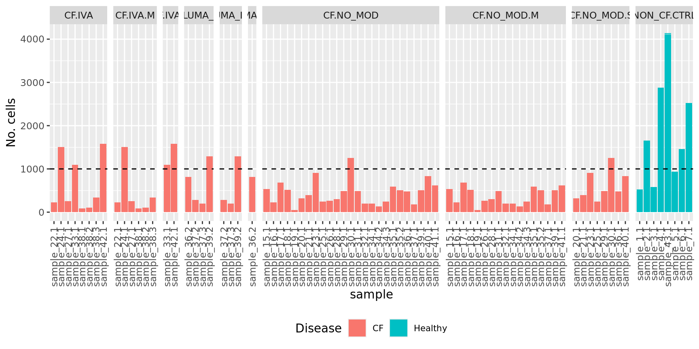
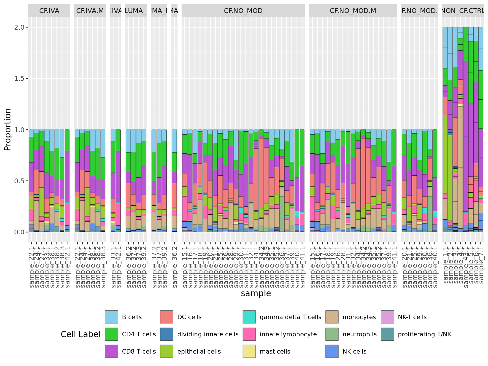
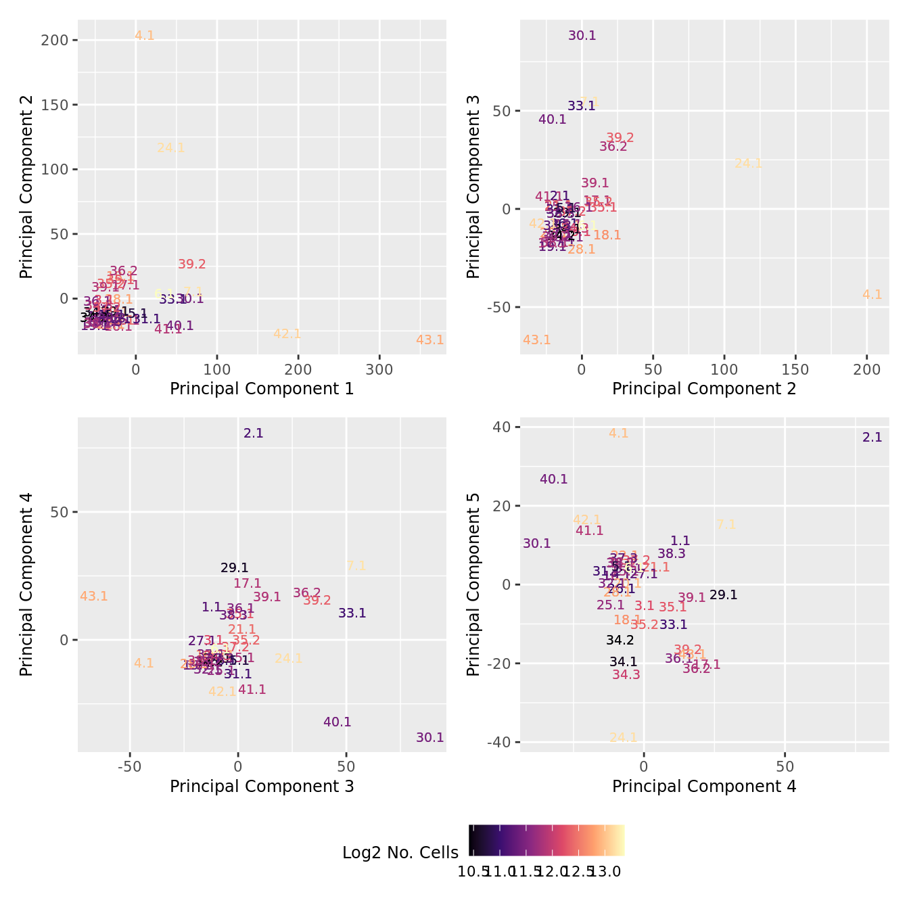
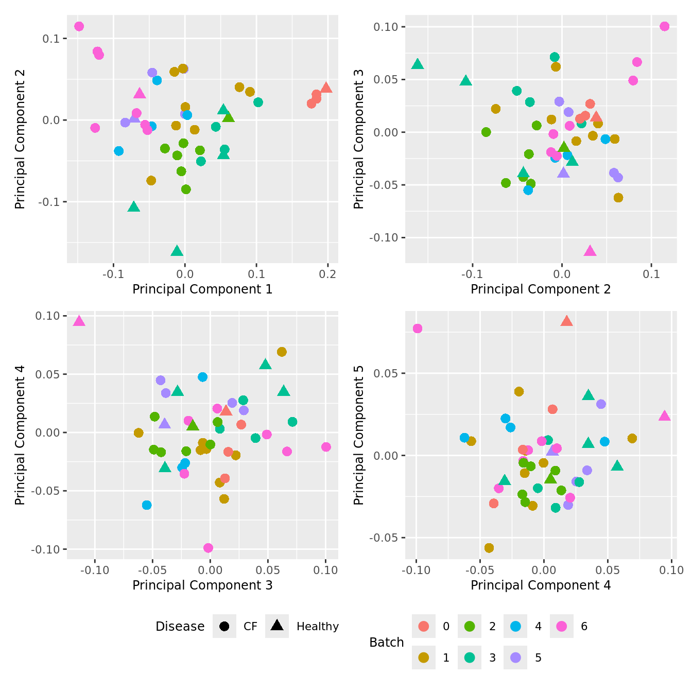
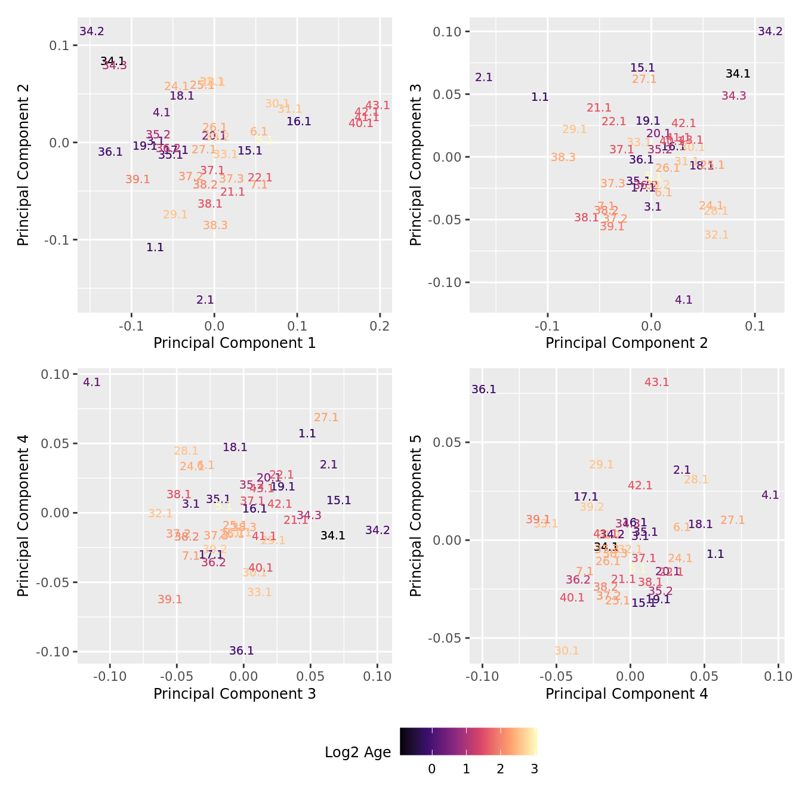
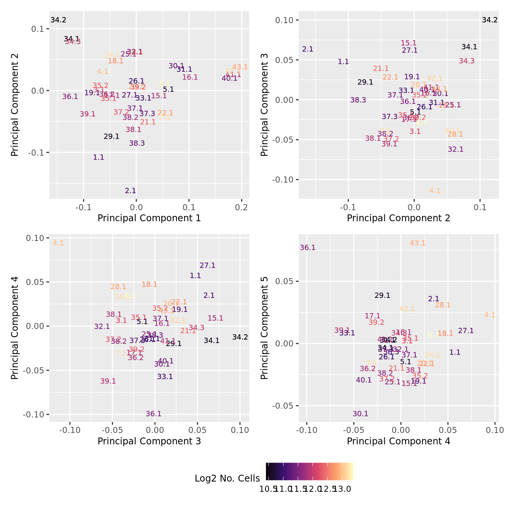
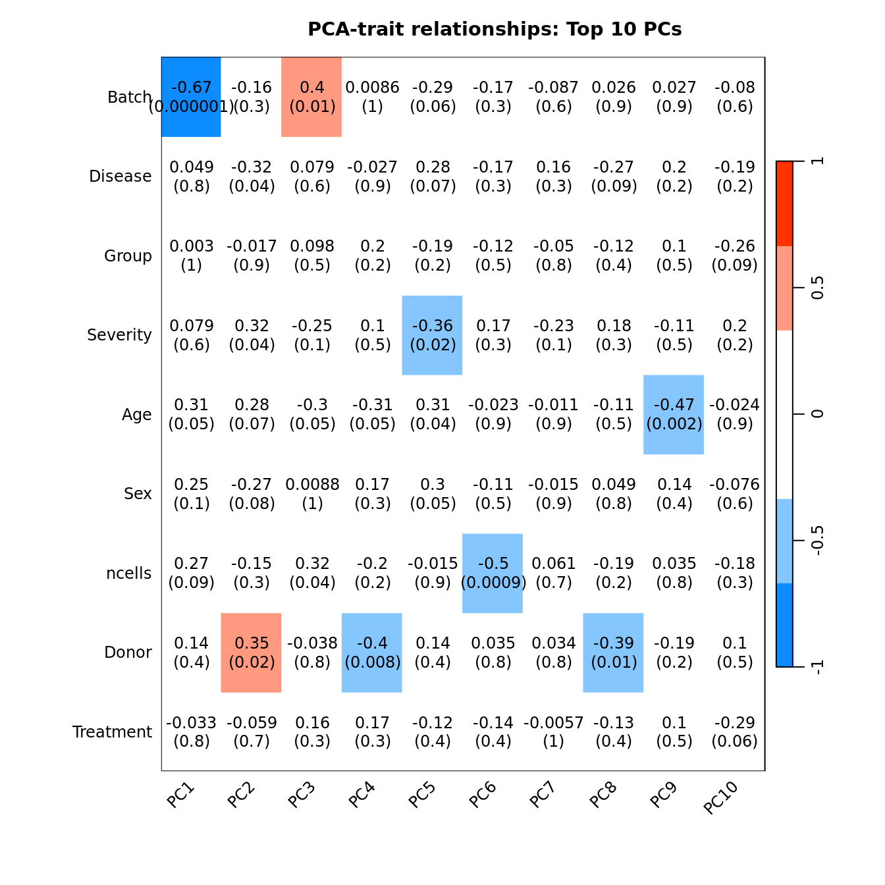
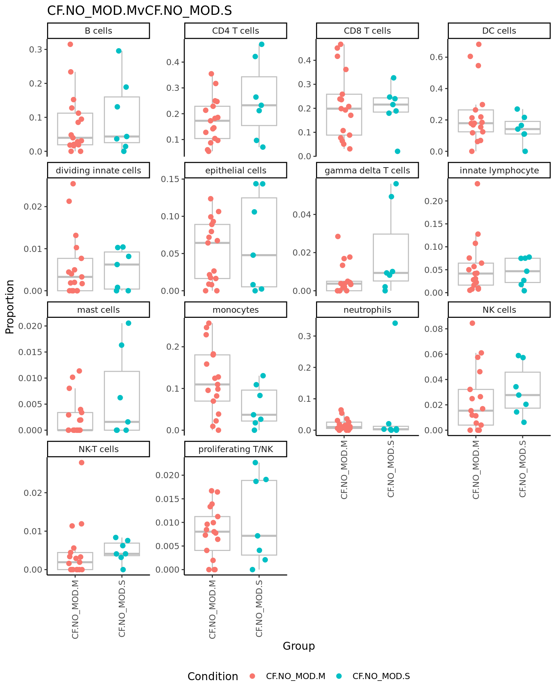
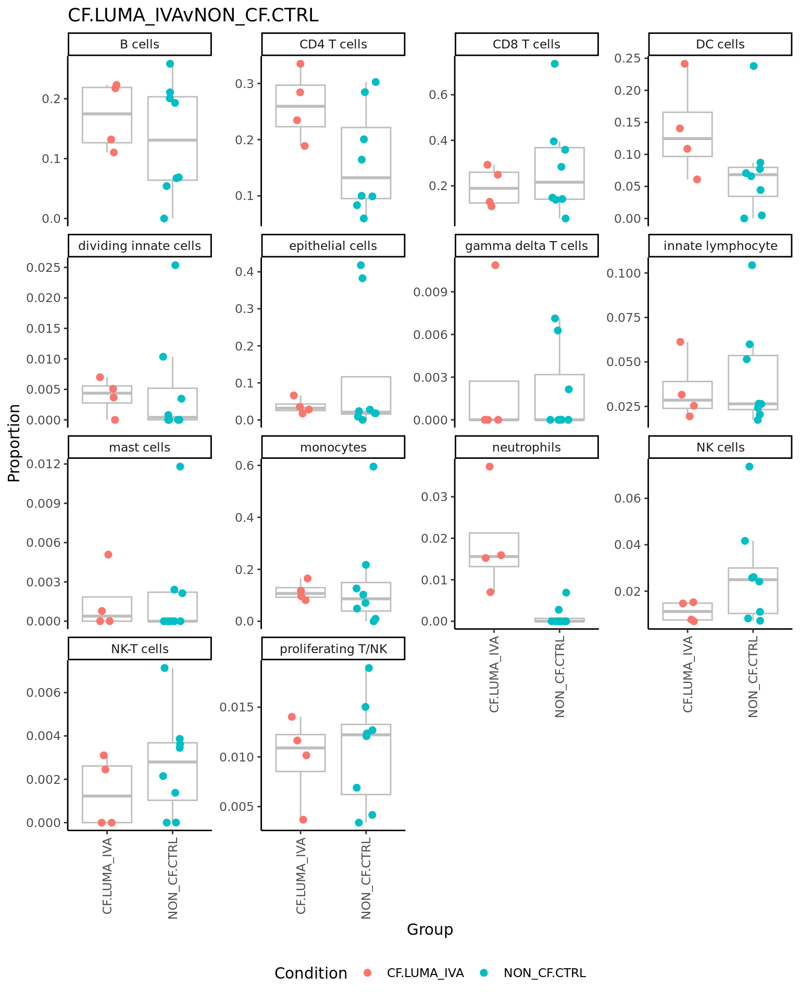

Inflammation of Paediatric Pulmonary Diseases
Cell type proportions analysis - broad labels
Jovana Maksimovic
August 09, 2024
Last updated: 2024-08-09
Checks: 7 0
Knit directory: paed-inflammation-CITEseq/
This reproducible R Markdown analysis was created with workflowr (version 1.7.1). The Checks tab describes the reproducibility checks that were applied when the results were created. The Past versions tab lists the development history.
Great! Since the R Markdown file has been committed to the Git repository, you know the exact version of the code that produced these results.
Great job! The global environment was empty. Objects defined in the global environment can affect the analysis in your R Markdown file in unknown ways. For reproduciblity it’s best to always run the code in an empty environment.
The command set.seed(20240216) was run prior to running
the code in the R Markdown file. Setting a seed ensures that any results
that rely on randomness, e.g. subsampling or permutations, are
reproducible.
Great job! Recording the operating system, R version, and package versions is critical for reproducibility.
Nice! There were no cached chunks for this analysis, so you can be confident that you successfully produced the results during this run.
Great job! Using relative paths to the files within your workflowr project makes it easier to run your code on other machines.
Great! You are using Git for version control. Tracking code development and connecting the code version to the results is critical for reproducibility.
The results in this page were generated with repository version 01f0f43. See the Past versions tab to see a history of the changes made to the R Markdown and HTML files.
Note that you need to be careful to ensure that all relevant files for
the analysis have been committed to Git prior to generating the results
(you can use wflow_publish or
wflow_git_commit). workflowr only checks the R Markdown
file, but you know if there are other scripts or data files that it
depends on. Below is the status of the Git repository when the results
were generated:
Ignored files:
Ignored: .Rhistory
Ignored: .Rproj.user/
Ignored: code/voomByGroup/
Ignored: data/.DS_Store
Ignored: data/C133_Neeland/
Ignored: data/C133_Neeland_batch0/
Ignored: data/C133_Neeland_batch1/
Ignored: data/C133_Neeland_batch2/
Ignored: data/C133_Neeland_batch3/
Ignored: data/C133_Neeland_batch4/
Ignored: data/C133_Neeland_batch5/
Ignored: data/C133_Neeland_batch6/
Ignored: data/C133_Neeland_merged/
Ignored: renv/library/
Ignored: renv/staging/
Untracked files:
Untracked: analysis/13.1_DGE_analysis_macro-alveolar_cells_decontx.Rmd
Untracked: code/cellbender.sh
Untracked: code/move_files.R
Untracked: data/heart10k_raw_feature_bc_matrix.h5
Untracked: data/oshlack_lab/
Untracked: data/output.log
Untracked: data/tiny_output.log
Untracked: data/tiny_raw_feature_bc_matrix.h5ad
Unstaged changes:
Modified: .DS_Store
Modified: analysis/06.1_azimuth_annotation_decontx.Rmd
Modified: code/run_cellbender.R
Note that any generated files, e.g. HTML, png, CSS, etc., are not included in this status report because it is ok for generated content to have uncommitted changes.
These are the previous versions of the repository in which changes were
made to the R Markdown
(analysis/14.0_proportions_analysis_broad.Rmd) and HTML
(docs/14.0_proportions_analysis_broad.html) files. If
you’ve configured a remote Git repository (see
?wflow_git_remote), click on the hyperlinks in the table
below to view the files as they were in that past version.
| File | Version | Author | Date | Message |
|---|---|---|---|---|
| Rmd | 01f0f43 | Jovana Maksimovic | 2024-08-09 | wflow_publish("analysis/14.*") |
Load libraries
suppressPackageStartupMessages({
library(SingleCellExperiment)
library(edgeR)
library(tidyverse)
library(ggplot2)
library(Seurat)
library(glmGamPoi)
library(dittoSeq)
library(clustree)
library(AnnotationDbi)
library(org.Hs.eg.db)
library(glue)
library(speckle)
library(patchwork)
library(paletteer)
library(tidyHeatmap)
library(here)
})
set.seed(42)
options(scipen=999)
options(future.globals.maxSize = 6500 * 1024^2)Load Data
files <- list.files(here("data/C133_Neeland_merged"),
pattern = "C133_Neeland_full_clean.*(macrophages|t_cells|other_cells)_annotated_diet.SEU.rds",
full.names = TRUE)
seuLst <- lapply(files[2:4], function(f) readRDS(f))
seu <- merge(seuLst[[1]],
y = c(seuLst[[2]],
seuLst[[3]]))
seuAn object of class Seurat
21568 features across 191521 samples within 1 assay
Active assay: RNA (21568 features, 0 variable features) used (Mb) gc trigger (Mb) limit (Mb) max used (Mb)
Ncells 10360801 553.4 18225151 973.4 NA 13595624 726.1
Vcells 1328307424 10134.2 3629547812 27691.3 65536 3489906798 26625.9Analyse Cell type proportions
# Differences in cell type proportions
props <- getTransformedProps(clusters = seu$Broad,
sample = seu$sample.id, transform="asin")
props$Proportions %>% knitr::kable()| sample_1.1 | sample_15.1 | sample_16.1 | sample_17.1 | sample_18.1 | sample_19.1 | sample_2.1 | sample_20.1 | sample_21.1 | sample_22.1 | sample_23.1 | sample_24.1 | sample_25.1 | sample_26.1 | sample_27.1 | sample_28.1 | sample_29.1 | sample_3.1 | sample_30.1 | sample_31.1 | sample_32.1 | sample_33.1 | sample_34.1 | sample_34.2 | sample_34.3 | sample_35.1 | sample_35.2 | sample_36.1 | sample_36.2 | sample_37.1 | sample_37.2 | sample_37.3 | sample_38.1 | sample_38.2 | sample_38.3 | sample_39.1 | sample_39.2 | sample_4.1 | sample_40.1 | sample_41.1 | sample_42.1 | sample_43.1 | sample_5.1 | sample_6.1 | sample_7.1 | |
|---|---|---|---|---|---|---|---|---|---|---|---|---|---|---|---|---|---|---|---|---|---|---|---|---|---|---|---|---|---|---|---|---|---|---|---|---|---|---|---|---|---|---|---|---|---|
| B cells | 0.0223723 | 0.0071704 | 0.0018883 | 0.0428725 | 0.0015235 | 0.0023866 | 0.0950689 | 0.0017933 | 0.0095134 | 0.0023447 | 0.2436149 | 0.0057254 | 0.0027506 | 0.0122549 | 0.0020268 | 0.0006984 | 0.0918367 | 0.0119505 | 0.0064935 | 0.0041667 | 0.0027000 | 0.0607761 | 0.0026738 | 0.0000000 | 0.0016584 | 0.0181452 | 0.0081239 | 0.0304653 | 0.0502624 | 0.0069589 | 0.0124824 | 0.0105605 | 0.0048374 | 0.0058787 | 0.0356175 | 0.0434431 | 0.0275087 | 0.0096690 | 0.0000000 | 0.0000000 | 0.0000000 | 0.0000000 | 0.0181922 | 0.0046205 | 0.0282528 |
| CD4 T cells | 0.0092866 | 0.0275786 | 0.0129485 | 0.0176849 | 0.0082267 | 0.0023866 | 0.0364283 | 0.0087101 | 0.0192097 | 0.0082063 | 0.1650295 | 0.0262504 | 0.0174205 | 0.0323529 | 0.0133766 | 0.0060064 | 0.0299745 | 0.0061886 | 0.1911977 | 0.0722222 | 0.0155248 | 0.1547452 | 0.0113636 | 0.0051207 | 0.0035537 | 0.0173387 | 0.0164368 | 0.0113827 | 0.0425297 | 0.0153097 | 0.0163076 | 0.0268075 | 0.0056436 | 0.0102104 | 0.0274874 | 0.0250944 | 0.0585045 | 0.0106607 | 0.1434307 | 0.0584656 | 0.0374161 | 0.0462648 | 0.0801592 | 0.0137671 | 0.0381306 |
| CD8 T cells | 0.0063318 | 0.0295091 | 0.0283248 | 0.0353698 | 0.0164534 | 0.0011933 | 0.0510884 | 0.0098629 | 0.0179290 | 0.0095252 | 0.1277014 | 0.0310036 | 0.0134474 | 0.0308824 | 0.0267531 | 0.0153653 | 0.0586735 | 0.0091763 | 0.0977633 | 0.0949074 | 0.0175498 | 0.1280972 | 0.0100267 | 0.0029261 | 0.0052120 | 0.0203629 | 0.0102022 | 0.0033478 | 0.0248550 | 0.0146138 | 0.0074492 | 0.0199025 | 0.0037624 | 0.0049505 | 0.0251645 | 0.0070157 | 0.0730337 | 0.0254122 | 0.1000000 | 0.0743386 | 0.0896167 | 0.2072391 | 0.0949403 | 0.0271570 | 0.0380244 |
| DC cells | 0.0097087 | 0.0184777 | 0.0037766 | 0.0391211 | 0.0173675 | 0.0055688 | 0.0017770 | 0.0067888 | 0.0080498 | 0.0016120 | 0.0628684 | 0.0398617 | 0.0201711 | 0.0230392 | 0.0162140 | 0.0065652 | 0.0440051 | 0.0147247 | 0.0497835 | 0.0157407 | 0.0121498 | 0.0719963 | 0.0788770 | 0.0643745 | 0.0322199 | 0.0219758 | 0.0251275 | 0.0348175 | 0.0544049 | 0.0073069 | 0.0062412 | 0.0048741 | 0.0010750 | 0.0024752 | 0.0081301 | 0.0232056 | 0.0350639 | 0.0126441 | 0.0000000 | 0.0000000 | 0.0000000 | 0.0000000 | 0.0204662 | 0.0045262 | 0.0059480 |
| dividing innate cells | 0.0000000 | 0.0002758 | 0.0002698 | 0.0024116 | 0.0006094 | 0.0003978 | 0.0093292 | 0.0002562 | 0.0000000 | 0.0000000 | 0.0108055 | 0.0012963 | 0.0006112 | 0.0000000 | 0.0000000 | 0.0001397 | 0.0031888 | 0.0006402 | 0.0003608 | 0.0000000 | 0.0003375 | 0.0032726 | 0.0013369 | 0.0000000 | 0.0002369 | 0.0002016 | 0.0001889 | 0.0016739 | 0.0008285 | 0.0000000 | 0.0000000 | 0.0004062 | 0.0000000 | 0.0003094 | 0.0011614 | 0.0035078 | 0.0017435 | 0.0006198 | 0.0000000 | 0.0000000 | 0.0000000 | 0.0000000 | 0.0000000 | 0.0000000 | 0.0001062 |
| epithelial cells | 0.0426340 | 0.0132377 | 0.0005395 | 0.0032154 | 0.0053321 | 0.0019889 | 0.1537095 | 0.0043551 | 0.0104281 | 0.0038101 | 0.2092338 | 0.0034568 | 0.0006112 | 0.0034314 | 0.0275638 | 0.0006984 | 0.0446429 | 0.0017072 | 0.0010823 | 0.0018519 | 0.0000000 | 0.0219729 | 0.0093583 | 0.0087783 | 0.0037906 | 0.0094758 | 0.0094464 | 0.0077000 | 0.0038663 | 0.0076548 | 0.0020133 | 0.0052803 | 0.0016125 | 0.0018564 | 0.0154859 | 0.0029682 | 0.0069740 | 0.0032230 | 0.0000000 | 0.0000000 | 0.0000000 | 0.0000000 | 0.0062536 | 0.0012258 | 0.0011683 |
| gamma delta T cells | 0.0000000 | 0.0005516 | 0.0008093 | 0.0008039 | 0.0003047 | 0.0000000 | 0.0000000 | 0.0003843 | 0.0007318 | 0.0000000 | 0.0000000 | 0.0003241 | 0.0006112 | 0.0004902 | 0.0012161 | 0.0001397 | 0.0000000 | 0.0000000 | 0.0223665 | 0.0064815 | 0.0003375 | 0.0014025 | 0.0000000 | 0.0000000 | 0.0000000 | 0.0002016 | 0.0000000 | 0.0003348 | 0.0000000 | 0.0010438 | 0.0000000 | 0.0000000 | 0.0000000 | 0.0003094 | 0.0038715 | 0.0002698 | 0.0027121 | 0.0000000 | 0.0171533 | 0.0029101 | 0.0028432 | 0.0017689 | 0.0005685 | 0.0000000 | 0.0009559 |
| innate lymphocyte | 0.0029548 | 0.0353006 | 0.0045859 | 0.0077706 | 0.0039610 | 0.0023866 | 0.0075522 | 0.0019214 | 0.0012806 | 0.0038101 | 0.0245580 | 0.0046451 | 0.0058068 | 0.0083333 | 0.0044589 | 0.0006984 | 0.0082908 | 0.0014938 | 0.0339105 | 0.0129630 | 0.0006750 | 0.0144928 | 0.0006684 | 0.0007315 | 0.0016584 | 0.0036290 | 0.0039675 | 0.0006696 | 0.0138083 | 0.0013918 | 0.0018120 | 0.0020309 | 0.0002687 | 0.0003094 | 0.0046458 | 0.0010793 | 0.0048431 | 0.0047105 | 0.0229927 | 0.0177249 | 0.0378710 | 0.0168730 | 0.0136441 | 0.0071664 | 0.0023367 |
| Macrophages | 0.8518362 | 0.8019857 | 0.9072026 | 0.7607181 | 0.8740098 | 0.9240255 | 0.6010662 | 0.9126425 | 0.8940724 | 0.9422626 | 0.1070727 | 0.7980987 | 0.8719438 | 0.8401961 | 0.8479935 | 0.9353262 | 0.6696429 | 0.9026889 | 0.5313853 | 0.7277778 | 0.8876139 | 0.4684432 | 0.8288770 | 0.8580834 | 0.8995499 | 0.8252016 | 0.8730399 | 0.7937730 | 0.7321182 | 0.9060543 | 0.8969197 | 0.9102356 | 0.9180328 | 0.9260520 | 0.8180410 | 0.8345926 | 0.7268501 | 0.8098426 | 0.6857664 | 0.7878307 | 0.7939270 | 0.6871683 | 0.7072200 | 0.8938237 | 0.8326075 |
| mast cells | 0.0000000 | 0.0000000 | 0.0000000 | 0.0005359 | 0.0001523 | 0.0000000 | 0.0008885 | 0.0000000 | 0.0000000 | 0.0000000 | 0.0098232 | 0.0001080 | 0.0012225 | 0.0014706 | 0.0008107 | 0.0000000 | 0.0063776 | 0.0000000 | 0.0007215 | 0.0023148 | 0.0000000 | 0.0112202 | 0.0000000 | 0.0000000 | 0.0004738 | 0.0004032 | 0.0003779 | 0.0010044 | 0.0000000 | 0.0000000 | 0.0000000 | 0.0004062 | 0.0002687 | 0.0000000 | 0.0007743 | 0.0002698 | 0.0001937 | 0.0021074 | 0.0000000 | 0.0000000 | 0.0000000 | 0.0000000 | 0.0005685 | 0.0000000 | 0.0000000 |
| monocytes | 0.0113972 | 0.0013789 | 0.0013488 | 0.0200965 | 0.0195003 | 0.0023866 | 0.0035540 | 0.0044832 | 0.0012806 | 0.0013189 | 0.0098232 | 0.0468834 | 0.0097800 | 0.0127451 | 0.0097284 | 0.0108954 | 0.0114796 | 0.0134443 | 0.0119048 | 0.0087963 | 0.0155248 | 0.0107527 | 0.0106952 | 0.0065838 | 0.0073442 | 0.0217742 | 0.0171925 | 0.0133914 | 0.0265120 | 0.0059151 | 0.0094625 | 0.0064988 | 0.0037624 | 0.0046411 | 0.0061943 | 0.0218564 | 0.0240217 | 0.1063592 | 0.0000000 | 0.0000000 | 0.0000000 | 0.0000000 | 0.0187607 | 0.0086752 | 0.0065852 |
| neutrophils | 0.0000000 | 0.0000000 | 0.0000000 | 0.0056270 | 0.0012188 | 0.0000000 | 0.0000000 | 0.0001281 | 0.0000000 | 0.0000000 | 0.0108055 | 0.0006482 | 0.0003056 | 0.0014706 | 0.0000000 | 0.0004191 | 0.0063776 | 0.0004268 | 0.0010823 | 0.0013889 | 0.0006750 | 0.0229079 | 0.0033422 | 0.0051207 | 0.0021322 | 0.0022177 | 0.0005668 | 0.0549046 | 0.0035902 | 0.0003479 | 0.0004027 | 0.0012185 | 0.0000000 | 0.0003094 | 0.0000000 | 0.0089045 | 0.0092987 | 0.0004958 | 0.0000000 | 0.0000000 | 0.0000000 | 0.0000000 | 0.0000000 | 0.0000000 | 0.0000000 |
| NK cells | 0.0046433 | 0.0085494 | 0.0051254 | 0.0058950 | 0.0036563 | 0.0000000 | 0.0026655 | 0.0014090 | 0.0020124 | 0.0011723 | 0.0157171 | 0.0016204 | 0.0015281 | 0.0014706 | 0.0008107 | 0.0000000 | 0.0044643 | 0.0014938 | 0.0266955 | 0.0060185 | 0.0016875 | 0.0079476 | 0.0020053 | 0.0000000 | 0.0002369 | 0.0020161 | 0.0011336 | 0.0010044 | 0.0033140 | 0.0003479 | 0.0004027 | 0.0012185 | 0.0013437 | 0.0006188 | 0.0011614 | 0.0000000 | 0.0019372 | 0.0019834 | 0.0175182 | 0.0100529 | 0.0068236 | 0.0073479 | 0.0068221 | 0.0005658 | 0.0098779 |
| NK-T cells | 0.0000000 | 0.0041368 | 0.0002698 | 0.0005359 | 0.0001523 | 0.0000000 | 0.0013327 | 0.0002562 | 0.0005488 | 0.0001465 | 0.0019646 | 0.0000000 | 0.0003056 | 0.0014706 | 0.0000000 | 0.0001397 | 0.0012755 | 0.0002134 | 0.0014430 | 0.0000000 | 0.0000000 | 0.0014025 | 0.0000000 | 0.0000000 | 0.0000000 | 0.0004032 | 0.0011336 | 0.0000000 | 0.0005523 | 0.0003479 | 0.0000000 | 0.0000000 | 0.0000000 | 0.0000000 | 0.0000000 | 0.0000000 | 0.0007749 | 0.0000000 | 0.0025547 | 0.0002646 | 0.0004549 | 0.0010886 | 0.0005685 | 0.0000943 | 0.0009559 |
| Proliferating macrophages | 0.0367244 | 0.0493657 | 0.0321014 | 0.0560021 | 0.0467703 | 0.0572792 | 0.0310973 | 0.0462406 | 0.0332967 | 0.0247655 | 0.0000000 | 0.0392136 | 0.0531785 | 0.0303922 | 0.0490474 | 0.0222098 | 0.0197704 | 0.0354247 | 0.0151515 | 0.0444444 | 0.0445494 | 0.0187003 | 0.0407754 | 0.0475494 | 0.0414594 | 0.0556452 | 0.0317400 | 0.0451958 | 0.0425297 | 0.0320111 | 0.0457016 | 0.0097482 | 0.0588551 | 0.0411510 | 0.0514905 | 0.0275229 | 0.0236343 | 0.0115284 | 0.0083942 | 0.0473545 | 0.0268395 | 0.0312968 | 0.0278567 | 0.0375295 | 0.0333510 |
| proliferating T/NK | 0.0021106 | 0.0024821 | 0.0008093 | 0.0013398 | 0.0007617 | 0.0000000 | 0.0044425 | 0.0007685 | 0.0016465 | 0.0010258 | 0.0009823 | 0.0008642 | 0.0003056 | 0.0000000 | 0.0000000 | 0.0006984 | 0.0000000 | 0.0004268 | 0.0086580 | 0.0009259 | 0.0006750 | 0.0018700 | 0.0000000 | 0.0007315 | 0.0004738 | 0.0010081 | 0.0013225 | 0.0003348 | 0.0008285 | 0.0006959 | 0.0008053 | 0.0008123 | 0.0005375 | 0.0009282 | 0.0007743 | 0.0002698 | 0.0029059 | 0.0007438 | 0.0021898 | 0.0010582 | 0.0042079 | 0.0009525 | 0.0039795 | 0.0008487 | 0.0016994 |
Cell type proportions by sample
props$Proportions %>%
data.frame %>%
inner_join(seu@meta.data %>%
dplyr::select(sample.id,
Disease,
Treatment,
Status,
Severity,
Group,
Batch,
Age,
Sex),
by = c("sample" = "sample.id")) %>%
distinct()-> dat
ggplot(dat, aes(x = sample, y = Freq, fill = clusters)) +
geom_bar(stat = "identity", color = "black", size = 0.1) +
theme(axis.text.x = element_text(angle = 90,
vjust = 0.5,
hjust = 1),
legend.text = element_text(size = 8),
legend.position = "bottom") +
labs(y = "Proportion", fill = "Cell Label") +
scale_fill_paletteer_d("miscpalettes::pastel", direction = 1) +
facet_grid(~Group, scales = "free_x", space = "free_x")No. cells per sample
props$Counts %>%
data.frame %>%
inner_join(seu@meta.data %>%
dplyr::select(sample.id,
Disease,
Treatment,
Status,
Severity,
Group,
Batch,
Age,
Sex),
by = c("sample" = "sample.id")) %>%
distinct() -> dat
ggplot(dat, aes(x = sample, y = Freq, fill = Disease)) +
geom_bar(stat = "identity") +
theme(axis.text.x = element_text(angle = 90,
vjust = 0.5,
hjust = 1),
legend.text = element_text(size = 8),
legend.position = "bottom") +
labs(y = "No. cells", fill = "Disease") +
facet_grid(~Group, scales = "free_x", space = "free_x") +
geom_hline(yintercept = 1000, linetype = "dashed")
Remove sample with too few cells.
seu <- subset(seu, cells = which(!seu$sample.id %in% c("sample_23.1")))
# Differences in cell type proportions
props <- getTransformedProps(clusters = seu$Broad,
sample = seu$sample.id, transform="asin")
props$Proportions %>% knitr::kable()| sample_1.1 | sample_15.1 | sample_16.1 | sample_17.1 | sample_18.1 | sample_19.1 | sample_2.1 | sample_20.1 | sample_21.1 | sample_22.1 | sample_24.1 | sample_25.1 | sample_26.1 | sample_27.1 | sample_28.1 | sample_29.1 | sample_3.1 | sample_30.1 | sample_31.1 | sample_32.1 | sample_33.1 | sample_34.1 | sample_34.2 | sample_34.3 | sample_35.1 | sample_35.2 | sample_36.1 | sample_36.2 | sample_37.1 | sample_37.2 | sample_37.3 | sample_38.1 | sample_38.2 | sample_38.3 | sample_39.1 | sample_39.2 | sample_4.1 | sample_40.1 | sample_41.1 | sample_42.1 | sample_43.1 | sample_5.1 | sample_6.1 | sample_7.1 | |
|---|---|---|---|---|---|---|---|---|---|---|---|---|---|---|---|---|---|---|---|---|---|---|---|---|---|---|---|---|---|---|---|---|---|---|---|---|---|---|---|---|---|---|---|---|
| B cells | 0.0223723 | 0.0071704 | 0.0018883 | 0.0428725 | 0.0015235 | 0.0023866 | 0.0950689 | 0.0017933 | 0.0095134 | 0.0023447 | 0.0057254 | 0.0027506 | 0.0122549 | 0.0020268 | 0.0006984 | 0.0918367 | 0.0119505 | 0.0064935 | 0.0041667 | 0.0027000 | 0.0607761 | 0.0026738 | 0.0000000 | 0.0016584 | 0.0181452 | 0.0081239 | 0.0304653 | 0.0502624 | 0.0069589 | 0.0124824 | 0.0105605 | 0.0048374 | 0.0058787 | 0.0356175 | 0.0434431 | 0.0275087 | 0.0096690 | 0.0000000 | 0.0000000 | 0.0000000 | 0.0000000 | 0.0181922 | 0.0046205 | 0.0282528 |
| CD4 T cells | 0.0092866 | 0.0275786 | 0.0129485 | 0.0176849 | 0.0082267 | 0.0023866 | 0.0364283 | 0.0087101 | 0.0192097 | 0.0082063 | 0.0262504 | 0.0174205 | 0.0323529 | 0.0133766 | 0.0060064 | 0.0299745 | 0.0061886 | 0.1911977 | 0.0722222 | 0.0155248 | 0.1547452 | 0.0113636 | 0.0051207 | 0.0035537 | 0.0173387 | 0.0164368 | 0.0113827 | 0.0425297 | 0.0153097 | 0.0163076 | 0.0268075 | 0.0056436 | 0.0102104 | 0.0274874 | 0.0250944 | 0.0585045 | 0.0106607 | 0.1434307 | 0.0584656 | 0.0374161 | 0.0462648 | 0.0801592 | 0.0137671 | 0.0381306 |
| CD8 T cells | 0.0063318 | 0.0295091 | 0.0283248 | 0.0353698 | 0.0164534 | 0.0011933 | 0.0510884 | 0.0098629 | 0.0179290 | 0.0095252 | 0.0310036 | 0.0134474 | 0.0308824 | 0.0267531 | 0.0153653 | 0.0586735 | 0.0091763 | 0.0977633 | 0.0949074 | 0.0175498 | 0.1280972 | 0.0100267 | 0.0029261 | 0.0052120 | 0.0203629 | 0.0102022 | 0.0033478 | 0.0248550 | 0.0146138 | 0.0074492 | 0.0199025 | 0.0037624 | 0.0049505 | 0.0251645 | 0.0070157 | 0.0730337 | 0.0254122 | 0.1000000 | 0.0743386 | 0.0896167 | 0.2072391 | 0.0949403 | 0.0271570 | 0.0380244 |
| DC cells | 0.0097087 | 0.0184777 | 0.0037766 | 0.0391211 | 0.0173675 | 0.0055688 | 0.0017770 | 0.0067888 | 0.0080498 | 0.0016120 | 0.0398617 | 0.0201711 | 0.0230392 | 0.0162140 | 0.0065652 | 0.0440051 | 0.0147247 | 0.0497835 | 0.0157407 | 0.0121498 | 0.0719963 | 0.0788770 | 0.0643745 | 0.0322199 | 0.0219758 | 0.0251275 | 0.0348175 | 0.0544049 | 0.0073069 | 0.0062412 | 0.0048741 | 0.0010750 | 0.0024752 | 0.0081301 | 0.0232056 | 0.0350639 | 0.0126441 | 0.0000000 | 0.0000000 | 0.0000000 | 0.0000000 | 0.0204662 | 0.0045262 | 0.0059480 |
| dividing innate cells | 0.0000000 | 0.0002758 | 0.0002698 | 0.0024116 | 0.0006094 | 0.0003978 | 0.0093292 | 0.0002562 | 0.0000000 | 0.0000000 | 0.0012963 | 0.0006112 | 0.0000000 | 0.0000000 | 0.0001397 | 0.0031888 | 0.0006402 | 0.0003608 | 0.0000000 | 0.0003375 | 0.0032726 | 0.0013369 | 0.0000000 | 0.0002369 | 0.0002016 | 0.0001889 | 0.0016739 | 0.0008285 | 0.0000000 | 0.0000000 | 0.0004062 | 0.0000000 | 0.0003094 | 0.0011614 | 0.0035078 | 0.0017435 | 0.0006198 | 0.0000000 | 0.0000000 | 0.0000000 | 0.0000000 | 0.0000000 | 0.0000000 | 0.0001062 |
| epithelial cells | 0.0426340 | 0.0132377 | 0.0005395 | 0.0032154 | 0.0053321 | 0.0019889 | 0.1537095 | 0.0043551 | 0.0104281 | 0.0038101 | 0.0034568 | 0.0006112 | 0.0034314 | 0.0275638 | 0.0006984 | 0.0446429 | 0.0017072 | 0.0010823 | 0.0018519 | 0.0000000 | 0.0219729 | 0.0093583 | 0.0087783 | 0.0037906 | 0.0094758 | 0.0094464 | 0.0077000 | 0.0038663 | 0.0076548 | 0.0020133 | 0.0052803 | 0.0016125 | 0.0018564 | 0.0154859 | 0.0029682 | 0.0069740 | 0.0032230 | 0.0000000 | 0.0000000 | 0.0000000 | 0.0000000 | 0.0062536 | 0.0012258 | 0.0011683 |
| gamma delta T cells | 0.0000000 | 0.0005516 | 0.0008093 | 0.0008039 | 0.0003047 | 0.0000000 | 0.0000000 | 0.0003843 | 0.0007318 | 0.0000000 | 0.0003241 | 0.0006112 | 0.0004902 | 0.0012161 | 0.0001397 | 0.0000000 | 0.0000000 | 0.0223665 | 0.0064815 | 0.0003375 | 0.0014025 | 0.0000000 | 0.0000000 | 0.0000000 | 0.0002016 | 0.0000000 | 0.0003348 | 0.0000000 | 0.0010438 | 0.0000000 | 0.0000000 | 0.0000000 | 0.0003094 | 0.0038715 | 0.0002698 | 0.0027121 | 0.0000000 | 0.0171533 | 0.0029101 | 0.0028432 | 0.0017689 | 0.0005685 | 0.0000000 | 0.0009559 |
| innate lymphocyte | 0.0029548 | 0.0353006 | 0.0045859 | 0.0077706 | 0.0039610 | 0.0023866 | 0.0075522 | 0.0019214 | 0.0012806 | 0.0038101 | 0.0046451 | 0.0058068 | 0.0083333 | 0.0044589 | 0.0006984 | 0.0082908 | 0.0014938 | 0.0339105 | 0.0129630 | 0.0006750 | 0.0144928 | 0.0006684 | 0.0007315 | 0.0016584 | 0.0036290 | 0.0039675 | 0.0006696 | 0.0138083 | 0.0013918 | 0.0018120 | 0.0020309 | 0.0002687 | 0.0003094 | 0.0046458 | 0.0010793 | 0.0048431 | 0.0047105 | 0.0229927 | 0.0177249 | 0.0378710 | 0.0168730 | 0.0136441 | 0.0071664 | 0.0023367 |
| Macrophages | 0.8518362 | 0.8019857 | 0.9072026 | 0.7607181 | 0.8740098 | 0.9240255 | 0.6010662 | 0.9126425 | 0.8940724 | 0.9422626 | 0.7980987 | 0.8719438 | 0.8401961 | 0.8479935 | 0.9353262 | 0.6696429 | 0.9026889 | 0.5313853 | 0.7277778 | 0.8876139 | 0.4684432 | 0.8288770 | 0.8580834 | 0.8995499 | 0.8252016 | 0.8730399 | 0.7937730 | 0.7321182 | 0.9060543 | 0.8969197 | 0.9102356 | 0.9180328 | 0.9260520 | 0.8180410 | 0.8345926 | 0.7268501 | 0.8098426 | 0.6857664 | 0.7878307 | 0.7939270 | 0.6871683 | 0.7072200 | 0.8938237 | 0.8326075 |
| mast cells | 0.0000000 | 0.0000000 | 0.0000000 | 0.0005359 | 0.0001523 | 0.0000000 | 0.0008885 | 0.0000000 | 0.0000000 | 0.0000000 | 0.0001080 | 0.0012225 | 0.0014706 | 0.0008107 | 0.0000000 | 0.0063776 | 0.0000000 | 0.0007215 | 0.0023148 | 0.0000000 | 0.0112202 | 0.0000000 | 0.0000000 | 0.0004738 | 0.0004032 | 0.0003779 | 0.0010044 | 0.0000000 | 0.0000000 | 0.0000000 | 0.0004062 | 0.0002687 | 0.0000000 | 0.0007743 | 0.0002698 | 0.0001937 | 0.0021074 | 0.0000000 | 0.0000000 | 0.0000000 | 0.0000000 | 0.0005685 | 0.0000000 | 0.0000000 |
| monocytes | 0.0113972 | 0.0013789 | 0.0013488 | 0.0200965 | 0.0195003 | 0.0023866 | 0.0035540 | 0.0044832 | 0.0012806 | 0.0013189 | 0.0468834 | 0.0097800 | 0.0127451 | 0.0097284 | 0.0108954 | 0.0114796 | 0.0134443 | 0.0119048 | 0.0087963 | 0.0155248 | 0.0107527 | 0.0106952 | 0.0065838 | 0.0073442 | 0.0217742 | 0.0171925 | 0.0133914 | 0.0265120 | 0.0059151 | 0.0094625 | 0.0064988 | 0.0037624 | 0.0046411 | 0.0061943 | 0.0218564 | 0.0240217 | 0.1063592 | 0.0000000 | 0.0000000 | 0.0000000 | 0.0000000 | 0.0187607 | 0.0086752 | 0.0065852 |
| neutrophils | 0.0000000 | 0.0000000 | 0.0000000 | 0.0056270 | 0.0012188 | 0.0000000 | 0.0000000 | 0.0001281 | 0.0000000 | 0.0000000 | 0.0006482 | 0.0003056 | 0.0014706 | 0.0000000 | 0.0004191 | 0.0063776 | 0.0004268 | 0.0010823 | 0.0013889 | 0.0006750 | 0.0229079 | 0.0033422 | 0.0051207 | 0.0021322 | 0.0022177 | 0.0005668 | 0.0549046 | 0.0035902 | 0.0003479 | 0.0004027 | 0.0012185 | 0.0000000 | 0.0003094 | 0.0000000 | 0.0089045 | 0.0092987 | 0.0004958 | 0.0000000 | 0.0000000 | 0.0000000 | 0.0000000 | 0.0000000 | 0.0000000 | 0.0000000 |
| NK cells | 0.0046433 | 0.0085494 | 0.0051254 | 0.0058950 | 0.0036563 | 0.0000000 | 0.0026655 | 0.0014090 | 0.0020124 | 0.0011723 | 0.0016204 | 0.0015281 | 0.0014706 | 0.0008107 | 0.0000000 | 0.0044643 | 0.0014938 | 0.0266955 | 0.0060185 | 0.0016875 | 0.0079476 | 0.0020053 | 0.0000000 | 0.0002369 | 0.0020161 | 0.0011336 | 0.0010044 | 0.0033140 | 0.0003479 | 0.0004027 | 0.0012185 | 0.0013437 | 0.0006188 | 0.0011614 | 0.0000000 | 0.0019372 | 0.0019834 | 0.0175182 | 0.0100529 | 0.0068236 | 0.0073479 | 0.0068221 | 0.0005658 | 0.0098779 |
| NK-T cells | 0.0000000 | 0.0041368 | 0.0002698 | 0.0005359 | 0.0001523 | 0.0000000 | 0.0013327 | 0.0002562 | 0.0005488 | 0.0001465 | 0.0000000 | 0.0003056 | 0.0014706 | 0.0000000 | 0.0001397 | 0.0012755 | 0.0002134 | 0.0014430 | 0.0000000 | 0.0000000 | 0.0014025 | 0.0000000 | 0.0000000 | 0.0000000 | 0.0004032 | 0.0011336 | 0.0000000 | 0.0005523 | 0.0003479 | 0.0000000 | 0.0000000 | 0.0000000 | 0.0000000 | 0.0000000 | 0.0000000 | 0.0007749 | 0.0000000 | 0.0025547 | 0.0002646 | 0.0004549 | 0.0010886 | 0.0005685 | 0.0000943 | 0.0009559 |
| Proliferating macrophages | 0.0367244 | 0.0493657 | 0.0321014 | 0.0560021 | 0.0467703 | 0.0572792 | 0.0310973 | 0.0462406 | 0.0332967 | 0.0247655 | 0.0392136 | 0.0531785 | 0.0303922 | 0.0490474 | 0.0222098 | 0.0197704 | 0.0354247 | 0.0151515 | 0.0444444 | 0.0445494 | 0.0187003 | 0.0407754 | 0.0475494 | 0.0414594 | 0.0556452 | 0.0317400 | 0.0451958 | 0.0425297 | 0.0320111 | 0.0457016 | 0.0097482 | 0.0588551 | 0.0411510 | 0.0514905 | 0.0275229 | 0.0236343 | 0.0115284 | 0.0083942 | 0.0473545 | 0.0268395 | 0.0312968 | 0.0278567 | 0.0375295 | 0.0333510 |
| proliferating T/NK | 0.0021106 | 0.0024821 | 0.0008093 | 0.0013398 | 0.0007617 | 0.0000000 | 0.0044425 | 0.0007685 | 0.0016465 | 0.0010258 | 0.0008642 | 0.0003056 | 0.0000000 | 0.0000000 | 0.0006984 | 0.0000000 | 0.0004268 | 0.0086580 | 0.0009259 | 0.0006750 | 0.0018700 | 0.0000000 | 0.0007315 | 0.0004738 | 0.0010081 | 0.0013225 | 0.0003348 | 0.0008285 | 0.0006959 | 0.0008053 | 0.0008123 | 0.0005375 | 0.0009282 | 0.0007743 | 0.0002698 | 0.0029059 | 0.0007438 | 0.0021898 | 0.0010582 | 0.0042079 | 0.0009525 | 0.0039795 | 0.0008487 | 0.0016994 |
Cell proportions by sample
props$Proportions %>%
data.frame %>%
inner_join(seu@meta.data %>%
dplyr::select(sample.id,
Disease,
Treatment,
Status,
Severity,
Group,
Batch,
Age,
Sex),
by = c("sample" = "sample.id")) %>%
distinct()-> dat
ggplot(dat, aes(x = sample, y = Freq, fill = clusters)) +
geom_bar(stat = "identity", color = "black", size = 0.1) +
theme(axis.text.x = element_text(angle = 90,
vjust = 0.5,
hjust = 1),
legend.text = element_text(size = 8),
legend.position = "bottom") +
labs(y = "Proportion", fill = "Cell Label") +
scale_fill_paletteer_d("miscpalettes::pastel", direction = 1) +
facet_grid(~Group, scales = "free_x", space = "free_x")
Cell proportions by cell type
props$Proportions %>%
data.frame %>%
inner_join(seu@meta.data %>%
dplyr::select(sample.id,
Annotation,
Broad,
Disease,
Treatment,
Status,
Severity,
Batch,
Age,
Sex),
by = c("sample" = "sample.id", "clusters" = "Broad")) %>%
distinct()-> dat
ggplot(dat,
aes(x = clusters, y = Freq, fill = clusters)) +
geom_boxplot(outlier.size = 0.1, size = 0.25) +
theme(axis.text.x = element_text(angle = 45,
vjust = 1,
hjust = 1),
legend.text = element_text(size = 8)) +
labs(y = "Proportion") +
scale_fill_paletteer_d("miscpalettes::pastel", direction = 1) +
NoLegend()
Explore sources of variation
Cell count data
Look at the sources of variation in the raw cell count level data.
dims <- list(c(1,2), c(2:3), c(3,4), c(4,5))
p <- vector("list", length(dims))
for(i in 1:length(dims)){
mds <- plotMDS(props$Counts,
gene.selection = "common",
plot = FALSE, dim.plot = dims[[i]])
data.frame(x = mds$x,
y = mds$y,
sample = rownames(mds$distance.matrix.squared)) %>%
left_join(seu@meta.data %>%
dplyr::select(sample.id,
Disease,
Treatment,
Status,
Severity,
Batch,
Age,
Sex),
by = c("sample" = "sample.id")) %>%
distinct() -> dat
p[[i]] <- ggplot(dat, aes(x = x, y = y,
shape = as.factor(Disease),
color = as.factor(Batch))) +
geom_point(size = 3) +
labs(x = glue("Principal Component {dims[[i]][1]}"),
y = glue("Principal Component {dims[[i]][2]}"),
colour = "Batch",
shape = "Disease") +
theme(legend.direction = "horizontal",
legend.text = element_text(size = 8),
legend.title = element_text(size = 9),
axis.text = element_text(size = 8),
axis.title = element_text(size = 9))
}
wrap_plots(p, cols = 2) + plot_layout(guides = "collect") &
theme(legend.position = "bottom") 
dims <- list(c(1,2), c(2:3), c(3,4), c(4,5))
p <- vector("list", length(dims))
for(i in 1:length(dims)){
mds <- plotMDS(props$Counts,
gene.selection = "common",
plot = FALSE, dim.plot = dims[[i]])
data.frame(x = mds$x,
y = mds$y,
sample = rownames(mds$distance.matrix.squared)) %>%
left_join(seu@meta.data %>%
dplyr::select(sample.id,
Disease,
Treatment,
Status,
Severity,
Participant,
Batch,
Age,
Sex),
by = c("sample" = "sample.id")) %>%
group_by(sample) %>%
mutate(ncells = n()) %>%
ungroup() %>%
distinct() -> dat
p[[i]] <- ggplot(dat, aes(x = x, y = y,
colour = log2(ncells)))+
geom_text(aes(label = str_remove_all(sample, "sample_")), size = 2.5) +
labs(x = glue("Principal Component {dims[[i]][1]}"),
y = glue("Principal Component {dims[[i]][2]}"),
colour = "Log2 No. Cells") +
theme(legend.direction = "horizontal",
legend.text = element_text(size = 8),
legend.title = element_text(size = 9),
axis.text = element_text(size = 8),
axis.title = element_text(size = 9)) +
scale_colour_viridis_c(option = "magma")
}
wrap_plots(p, cols = 2) + plot_layout(guides = "collect") &
theme(legend.position = "bottom") 
Cell proportion data
Look at the sources of variation in the cell proportions data.
dims <- list(c(1,2), c(2:3), c(3,4), c(4,5))
p <- vector("list", length(dims))
for(i in 1:length(dims)){
mds <- plotMDS(props$TransformedProps,
gene.selection = "common",
plot = FALSE, dim.plot = dims[[i]])
data.frame(x = mds$x,
y = mds$y,
sample = rownames(mds$distance.matrix.squared)) %>%
left_join(seu@meta.data %>%
dplyr::select(sample.id,
Disease,
Treatment,
Status,
Severity,
Batch,
Age,
Sex),
by = c("sample" = "sample.id")) %>%
distinct() -> dat
p[[i]] <- ggplot(dat, aes(x = x, y = y,
shape = as.factor(Disease),
color = as.factor(Batch)))+
geom_point(size = 3) +
labs(x = glue("Principal Component {dims[[i]][1]}"),
y = glue("Principal Component {dims[[i]][2]}"),
colour = "Batch",
shape = "Disease") +
theme(legend.direction = "horizontal",
legend.text = element_text(size = 8),
legend.title = element_text(size = 9),
axis.text = element_text(size = 8),
axis.title = element_text(size = 9))
}
wrap_plots(p, cols = 2) + plot_layout(guides = "collect") &
theme(legend.position = "bottom") 
dims <- list(c(1,2), c(2:3), c(3,4), c(4,5))
p <- vector("list", length(dims))
for(i in 1:length(dims)){
mds <- plotMDS(props$TransformedProps,
gene.selection = "common",
plot = FALSE, dim.plot = dims[[i]])
data.frame(x = mds$x,
y = mds$y,
sample = rownames(mds$distance.matrix.squared)) %>%
left_join(seu@meta.data %>%
dplyr::select(sample.id,
Disease,
Treatment,
Status,
Severity,
Batch,
Age,
Sex),
by = c("sample" = "sample.id")) %>%
distinct() -> dat
p[[i]] <- ggplot(dat, aes(x = x, y = y,
shape = as.factor(Disease),
color = Sex))+
geom_point(size = 3) +
labs(x = glue("Principal Component {dims[[i]][1]}"),
y = glue("Principal Component {dims[[i]][2]}"),
colour = "Sex",
shape = "Disease") +
theme(legend.direction = "horizontal",
legend.text = element_text(size = 8),
legend.title = element_text(size = 9),
axis.text = element_text(size = 8),
axis.title = element_text(size = 9))
}
wrap_plots(p, cols = 2) + plot_layout(guides = "collect") &
theme(legend.position = "bottom") 
dims <- list(c(1,2), c(2:3), c(3,4), c(4,5))
p <- vector("list", length(dims))
for(i in 1:length(dims)){
mds <- plotMDS(props$TransformedProps,
gene.selection = "common",
plot = FALSE, dim.plot = dims[[i]])
data.frame(x = mds$x,
y = mds$y,
sample = rownames(mds$distance.matrix.squared)) %>%
left_join(seu@meta.data %>%
dplyr::select(sample.id,
Disease,
Treatment,
Status,
Severity,
Participant,
Batch,
Age,
Sex),
by = c("sample" = "sample.id")) %>%
group_by(sample) %>%
mutate(ncells = n()) %>%
ungroup() %>%
distinct() -> dat
p[[i]] <- ggplot(dat, aes(x = x, y = y,
colour = log2(Age)))+
geom_text(aes(label = str_remove_all(sample, "sample_")), size = 2.5) +
labs(x = glue("Principal Component {dims[[i]][1]}"),
y = glue("Principal Component {dims[[i]][2]}"),
colour = "Log2 Age") +
theme(legend.direction = "horizontal",
legend.text = element_text(size = 8),
legend.title = element_text(size = 9),
axis.text = element_text(size = 8),
axis.title = element_text(size = 9)) +
scale_colour_viridis_c(option = "magma")
}
wrap_plots(p, cols = 2) + plot_layout(guides = "collect") &
theme(legend.position = "bottom") 
dims <- list(c(1,2), c(2:3), c(3,4), c(4,5))
p <- vector("list", length(dims))
for(i in 1:length(dims)){
mds <- plotMDS(props$TransformedProps,
gene.selection = "common",
plot = FALSE, dim.plot = dims[[i]])
data.frame(x = mds$x,
y = mds$y,
sample = rownames(mds$distance.matrix.squared)) %>%
left_join(seu@meta.data %>%
dplyr::select(sample.id,
Disease,
Treatment,
Status,
Severity,
Participant,
Batch,
Age,
Sex),
by = c("sample" = "sample.id")) %>%
group_by(sample) %>%
mutate(ncells = n()) %>%
ungroup() %>%
distinct() -> dat
p[[i]] <- ggplot(dat, aes(x = x, y = y,
colour = log2(ncells)))+
geom_text(aes(label = str_remove_all(sample, "sample_")), size = 2.5) +
labs(x = glue("Principal Component {dims[[i]][1]}"),
y = glue("Principal Component {dims[[i]][2]}"),
colour = "Log2 No. Cells") +
theme(legend.direction = "horizontal",
legend.text = element_text(size = 8),
legend.title = element_text(size = 9),
axis.text = element_text(size = 8),
axis.title = element_text(size = 9)) +
scale_colour_viridis_c(option = "magma")
}
wrap_plots(p, cols = 2) + plot_layout(guides = "collect") &
theme(legend.position = "bottom") 
Principal components versus traits
Principal components analysis (PCA) allows us to mathematically determine the sources of variation in the data. We can then investigate whether these correlate with any of the specifed covariates. First, we calculate the principal components. The scree plot belows shows us that most of the variation in this data is captured by the top 7 principal components.
PCs <- prcomp(t(props$TransformedProps), center = TRUE,
scale = TRUE, retx = TRUE)
loadings = PCs$x # pc loadings
plot(PCs, type="lines") # scree plot
Collect all of the known sample traits.
nGenes = nrow(props$TransformedProps)
nSamples = ncol(props$TransformedProps)
info <- seu@meta.data %>%
dplyr::select(sample.id,
Disease,
Treatment,
Status,
Severity,
Participant,
Group,
Batch,
Age,
Sex) %>%
group_by(sample.id) %>%
mutate(ncells = n()) %>%
ungroup() %>%
distinct()
m <- match(colnames(props$TransformedProps), info$sample.id)
info <- info[m,]
datTraits <- info %>% dplyr::select(Participant, Batch, Disease, Status,
Group, Severity, Age, Sex, ncells) %>%
mutate(Age = log2(Age),
ncells = log2(ncells),
Donor = factor(Participant),
Batch = factor(Batch),
Disease = factor(Disease,
labels = 1:length(unique(Disease))),
Group = factor(Group,
labels = 1:length(unique(Group))),
Treatment = factor(Status,
labels = 1:length(unique(Status))),
Sex = factor(Sex, labels = length(unique(Sex))),
Severity = factor(Severity, labels = length(unique(Severity)))) %>%
mutate(across(everything(), as.numeric)) %>%
dplyr::select(-Participant, -Status)
datTraits %>%
knitr::kable()| Batch | Disease | Group | Severity | Age | Sex | ncells | Donor | Treatment |
|---|---|---|---|---|---|---|---|---|
| 4 | 2 | 7 | 1 | -0.2590872 | 2 | 11.21006 | 1 | 4 |
| 4 | 1 | 5 | 2 | -0.0939001 | 2 | 11.82416 | 2 | 3 |
| 4 | 1 | 5 | 2 | -0.1151479 | 1 | 11.85604 | 3 | 3 |
| 5 | 1 | 5 | 2 | -0.0441471 | 1 | 11.86573 | 4 | 3 |
| 5 | 1 | 5 | 2 | 0.1428834 | 2 | 12.68036 | 5 | 3 |
| 6 | 1 | 5 | 2 | -0.0729608 | 1 | 11.29577 | 6 | 3 |
| 4 | 2 | 7 | 1 | 0.1464588 | 2 | 11.13635 | 7 | 4 |
| 6 | 1 | 6 | 3 | 0.5597097 | 2 | 12.93055 | 8 | 3 |
| 4 | 1 | 6 | 3 | 1.5743836 | 1 | 12.41627 | 9 | 3 |
| 4 | 1 | 1 | 2 | 1.5993830 | 2 | 12.73640 | 10 | 1 |
| 6 | 1 | 1 | 2 | 2.3883594 | 2 | 13.17633 | 11 | 1 |
| 2 | 1 | 6 | 3 | 2.2957230 | 1 | 11.67596 | 12 | 3 |
| 2 | 1 | 5 | 2 | 2.3360877 | 2 | 10.99435 | 13 | 3 |
| 2 | 1 | 1 | 2 | 2.2980155 | 2 | 11.26854 | 14 | 1 |
| 6 | 1 | 5 | 2 | 2.5790214 | 1 | 12.80554 | 15 | 3 |
| 2 | 1 | 6 | 3 | 2.5823250 | 1 | 10.61471 | 16 | 3 |
| 6 | 2 | 7 | 1 | 0.1321035 | 2 | 12.19414 | 17 | 4 |
| 2 | 1 | 6 | 3 | 2.5889097 | 1 | 11.43671 | 18 | 3 |
| 2 | 1 | 5 | 2 | 2.5583683 | 1 | 11.07682 | 19 | 3 |
| 2 | 1 | 5 | 2 | 2.5670653 | 1 | 11.53284 | 20 | 3 |
| 2 | 1 | 2 | 3 | 2.5730557 | 2 | 11.06272 | 21 | 1 |
| 7 | 1 | 5 | 2 | -0.9343238 | 1 | 10.54689 | 22 | 3 |
| 7 | 1 | 5 | 2 | 0.0918737 | 1 | 10.41680 | 22 | 3 |
| 7 | 1 | 5 | 2 | 1.0409164 | 1 | 12.04337 | 22 | 3 |
| 7 | 1 | 5 | 2 | 0.0807044 | 2 | 12.27612 | 23 | 3 |
| 7 | 1 | 5 | 2 | 0.9940589 | 2 | 12.36987 | 23 | 3 |
| 7 | 1 | 6 | 3 | -0.0564254 | 1 | 11.54448 | 24 | 3 |
| 7 | 1 | 4 | 3 | 1.1764977 | 1 | 11.82217 | 24 | 2 |
| 3 | 1 | 5 | 2 | 1.5597097 | 1 | 11.48884 | 25 | 3 |
| 3 | 1 | 3 | 2 | 2.1930156 | 1 | 12.27816 | 25 | 2 |
| 3 | 1 | 3 | 2 | 2.2980155 | 1 | 11.26562 | 25 | 2 |
| 3 | 1 | 1 | 2 | 1.5703964 | 2 | 11.86147 | 26 | 1 |
| 3 | 1 | 1 | 2 | 2.0206033 | 2 | 11.65821 | 26 | 1 |
| 3 | 1 | 1 | 2 | 2.3485584 | 2 | 11.33483 | 26 | 1 |
| 5 | 1 | 5 | 2 | 1.9730702 | 1 | 11.85565 | 27 | 3 |
| 5 | 1 | 3 | 2 | 2.6297159 | 1 | 12.33371 | 27 | 2 |
| 7 | 2 | 7 | 1 | 0.2923784 | 2 | 12.97782 | 28 | 4 |
| 1 | 1 | 6 | 3 | 1.5801455 | 2 | 11.41996 | 29 | 3 |
| 1 | 1 | 5 | 2 | 1.5801455 | 2 | 11.88417 | 30 | 3 |
| 1 | 1 | 2 | 3 | 1.5993178 | 2 | 13.10214 | 31 | 1 |
| 1 | 2 | 7 | 1 | 1.5849625 | 2 | 12.84333 | 32 | 4 |
| 3 | 2 | 7 | 1 | 3.0699187 | 1 | 10.78054 | 33 | 4 |
| 4 | 2 | 7 | 1 | 2.4204621 | 2 | 13.37246 | 34 | 4 |
| 4 | 2 | 7 | 1 | 2.2356012 | 1 | 13.20075 | 35 | 4 |
Correlate known sample traits with the top 10 principal components. This can help us determine which traits are potentially contributing to the main sources of variation in the data and should thus be included in our statistical analysis.
moduleTraitCor <- suppressWarnings(cor(loadings[, 1:10], datTraits, use = "p"))
moduleTraitPvalue <- WGCNA::corPvalueStudent(moduleTraitCor, (nSamples - 2))
textMatrix <- paste(signif(moduleTraitCor, 2), "\n(",
signif(moduleTraitPvalue, 1), ")", sep = "")
dim(textMatrix) <- dim(moduleTraitCor)
## Display the correlation values within a heatmap plot
par(cex=0.75, mar = c(6, 8.5, 3, 3))
WGCNA::labeledHeatmap(Matrix = t(moduleTraitCor),
xLabels = colnames(loadings)[1:10],
yLabels = names(datTraits),
colorLabels = FALSE,
colors = WGCNA::blueWhiteRed(6),
textMatrix = t(textMatrix),
setStdMargins = FALSE,
cex.text = 1,
zlim = c(-1,1),
main = paste("PCA-trait relationships: Top 10 PCs"))
Statistical analysis using the propeller and
limma approach
Create the design matrix.
group <- factor(info$Group)
participant <- factor(info$Participant)
age <- log2(info$Age)
batch <- factor(info$Batch)
sex <- factor(info$Sex)
design <- model.matrix(~ 0 + group + batch)
colnames(design)[1:7] <- levels(group)
design CF.IVA.M CF.IVA.S CF.LUMA_IVA.M CF.LUMA_IVA.S CF.NO_MOD.M CF.NO_MOD.S
1 0 0 0 0 0 0
2 0 0 0 0 1 0
3 0 0 0 0 1 0
4 0 0 0 0 1 0
5 0 0 0 0 1 0
6 0 0 0 0 1 0
7 0 0 0 0 0 0
8 0 0 0 0 0 1
9 0 0 0 0 0 1
10 1 0 0 0 0 0
11 1 0 0 0 0 0
12 0 0 0 0 0 1
13 0 0 0 0 1 0
14 1 0 0 0 0 0
15 0 0 0 0 1 0
16 0 0 0 0 0 1
17 0 0 0 0 0 0
18 0 0 0 0 0 1
19 0 0 0 0 1 0
20 0 0 0 0 1 0
21 0 1 0 0 0 0
22 0 0 0 0 1 0
23 0 0 0 0 1 0
24 0 0 0 0 1 0
25 0 0 0 0 1 0
26 0 0 0 0 1 0
27 0 0 0 0 0 1
28 0 0 0 1 0 0
29 0 0 0 0 1 0
30 0 0 1 0 0 0
31 0 0 1 0 0 0
32 1 0 0 0 0 0
33 1 0 0 0 0 0
34 1 0 0 0 0 0
35 0 0 0 0 1 0
36 0 0 1 0 0 0
37 0 0 0 0 0 0
38 0 0 0 0 0 1
39 0 0 0 0 1 0
40 0 1 0 0 0 0
41 0 0 0 0 0 0
42 0 0 0 0 0 0
43 0 0 0 0 0 0
44 0 0 0 0 0 0
NON_CF.CTRL batch1 batch2 batch3 batch4 batch5 batch6
1 1 0 0 1 0 0 0
2 0 0 0 1 0 0 0
3 0 0 0 1 0 0 0
4 0 0 0 0 1 0 0
5 0 0 0 0 1 0 0
6 0 0 0 0 0 1 0
7 1 0 0 1 0 0 0
8 0 0 0 0 0 1 0
9 0 0 0 1 0 0 0
10 0 0 0 1 0 0 0
11 0 0 0 0 0 1 0
12 0 1 0 0 0 0 0
13 0 1 0 0 0 0 0
14 0 1 0 0 0 0 0
15 0 0 0 0 0 1 0
16 0 1 0 0 0 0 0
17 1 0 0 0 0 1 0
18 0 1 0 0 0 0 0
19 0 1 0 0 0 0 0
20 0 1 0 0 0 0 0
21 0 1 0 0 0 0 0
22 0 0 0 0 0 0 1
23 0 0 0 0 0 0 1
24 0 0 0 0 0 0 1
25 0 0 0 0 0 0 1
26 0 0 0 0 0 0 1
27 0 0 0 0 0 0 1
28 0 0 0 0 0 0 1
29 0 0 1 0 0 0 0
30 0 0 1 0 0 0 0
31 0 0 1 0 0 0 0
32 0 0 1 0 0 0 0
33 0 0 1 0 0 0 0
34 0 0 1 0 0 0 0
35 0 0 0 0 1 0 0
36 0 0 0 0 1 0 0
37 1 0 0 0 0 0 1
38 0 0 0 0 0 0 0
39 0 0 0 0 0 0 0
40 0 0 0 0 0 0 0
41 1 0 0 0 0 0 0
42 1 0 1 0 0 0 0
43 1 0 0 1 0 0 0
44 1 0 0 1 0 0 0
attr(,"assign")
[1] 1 1 1 1 1 1 1 2 2 2 2 2 2
attr(,"contrasts")
attr(,"contrasts")$group
[1] "contr.treatment"
attr(,"contrasts")$batch
[1] "contr.treatment"Create the contrast matrix.
contr <- makeContrasts(CF.NO_MODvCF.IVA = 0.5*(CF.NO_MOD.M + CF.NO_MOD.S) - 0.5*(CF.IVA.M + CF.IVA.S),
CF.NO_MODvCF.LUMA_IVA = 0.5*(CF.NO_MOD.M + CF.NO_MOD.S) - 0.5*(CF.LUMA_IVA.M + CF.LUMA_IVA.S),
CF.NO_MOD.MvCF.NO_MOD.S = CF.NO_MOD.M - CF.NO_MOD.S,
CF.NO_MODvNON_CF.CTRL = 0.5*(CF.NO_MOD.M + CF.NO_MOD.S) - NON_CF.CTRL,
CF.IVAvNON_CF.CTRL = 0.5*(CF.IVA.M + CF.IVA.S) - NON_CF.CTRL,
CF.LUMA_IVAvNON_CF.CTRL = 0.5*(CF.LUMA_IVA.M + CF.LUMA_IVA.S) - NON_CF.CTRL,
levels = design)
contr Contrasts
Levels CF.NO_MODvCF.IVA CF.NO_MODvCF.LUMA_IVA CF.NO_MOD.MvCF.NO_MOD.S
CF.IVA.M -0.5 0.0 0
CF.IVA.S -0.5 0.0 0
CF.LUMA_IVA.M 0.0 -0.5 0
CF.LUMA_IVA.S 0.0 -0.5 0
CF.NO_MOD.M 0.5 0.5 1
CF.NO_MOD.S 0.5 0.5 -1
NON_CF.CTRL 0.0 0.0 0
batch1 0.0 0.0 0
batch2 0.0 0.0 0
batch3 0.0 0.0 0
batch4 0.0 0.0 0
batch5 0.0 0.0 0
batch6 0.0 0.0 0
Contrasts
Levels CF.NO_MODvNON_CF.CTRL CF.IVAvNON_CF.CTRL
CF.IVA.M 0.0 0.5
CF.IVA.S 0.0 0.5
CF.LUMA_IVA.M 0.0 0.0
CF.LUMA_IVA.S 0.0 0.0
CF.NO_MOD.M 0.5 0.0
CF.NO_MOD.S 0.5 0.0
NON_CF.CTRL -1.0 -1.0
batch1 0.0 0.0
batch2 0.0 0.0
batch3 0.0 0.0
batch4 0.0 0.0
batch5 0.0 0.0
batch6 0.0 0.0
Contrasts
Levels CF.LUMA_IVAvNON_CF.CTRL
CF.IVA.M 0.0
CF.IVA.S 0.0
CF.LUMA_IVA.M 0.5
CF.LUMA_IVA.S 0.5
CF.NO_MOD.M 0.0
CF.NO_MOD.S 0.0
NON_CF.CTRL -1.0
batch1 0.0
batch2 0.0
batch3 0.0
batch4 0.0
batch5 0.0
batch6 0.0Add random effect for samples from the same individual.
dupcor <- duplicateCorrelation(props$TransformedProps, design=design,
block=participant)
dupcor$consensus.correlation
[1] 0.6475815
$cor
[1] 0.6475815
$atanh.correlations
[1] 0.7046178 1.2192721 0.3225704 0.5734219 0.3836834 1.2106267
[7] 0.1105819 1.0992546 0.8331586 0.4470538 1.7268879 1.5298445
[13] 0.9810777 0.6771234 -0.5360603 0.8016052Fit the model.
fit <- lmFit(props$TransformedProps, design=design, block=participant,
correlation=dupcor$consensus)
fit2 <- contrasts.fit(fit, contr)
fit2 <- eBayes(fit2, robust=TRUE, trend=FALSE)
pvalue <- 0.05
summary(decideTests(fit2, p.value = pvalue)) CF.NO_MODvCF.IVA CF.NO_MODvCF.LUMA_IVA CF.NO_MOD.MvCF.NO_MOD.S
Down 0 0 0
NotSig 16 15 16
Up 0 1 0
CF.NO_MODvNON_CF.CTRL CF.IVAvNON_CF.CTRL CF.LUMA_IVAvNON_CF.CTRL
Down 1 0 0
NotSig 15 16 16
Up 0 0 0Results
ANOVA
topTable(fit2) CF.NO_MODvCF.IVA CF.NO_MODvCF.LUMA_IVA
neutrophils -0.019722250 0.06035614
monocytes -0.024786560 -0.02592302
mast cells -0.019323905 0.01383322
CD8 T cells -0.031004443 -0.07544362
Macrophages 0.055336009 0.06147213
innate lymphocyte -0.012832123 -0.04659819
B cells -0.028030487 -0.03594194
CD4 T cells -0.007798471 -0.06683024
NK cells 0.009068285 -0.01615113
gamma delta T cells 0.016074104 0.01262772
CF.NO_MOD.MvCF.NO_MOD.S CF.NO_MODvNON_CF.CTRL
neutrophils -0.0354748540 0.0189455379
monocytes 0.0003329593 -0.0716913715
mast cells -0.0109423278 -0.0091787516
CD8 T cells -0.0067822197 -0.0774654928
Macrophages 0.0865178054 0.0897824139
innate lymphocyte -0.0035924063 -0.0009096075
B cells -0.0525320831 -0.0469602254
CD4 T cells -0.0546268729 -0.0081952353
NK cells -0.0225312262 -0.0036286783
gamma delta T cells -0.0232651224 0.0197439955
CF.IVAvNON_CF.CTRL CF.LUMA_IVAvNON_CF.CTRL AveExpr
neutrophils 0.038667788 -0.041410598 0.03225974
monocytes -0.046904811 -0.045768351 0.09640016
mast cells 0.010145153 -0.023011974 0.01581934
CD8 T cells -0.046461050 -0.002021871 0.16947960
Macrophages 0.034446405 0.028310282 1.14015663
innate lymphocyte 0.011922515 0.045688580 0.07422051
B cells -0.018929738 -0.011018281 0.10119310
CD4 T cells -0.000396764 0.058635003 0.16060800
NK cells -0.012696963 0.012522454 0.05126451
gamma delta T cells 0.003669892 0.007116278 0.02480051
F P.Value adj.P.Val
neutrophils 4.781092 0.003701551 0.0316720
monocytes 4.723029 0.003959000 0.0316720
mast cells 2.368124 0.072577232 0.3061273
CD8 T cells 2.329604 0.076531821 0.3061273
Macrophages 1.997970 0.117789623 0.3662978
innate lymphocyte 1.878489 0.137361662 0.3662978
B cells 1.732906 0.166309247 0.3760054
CD4 T cells 1.638400 0.188002704 0.3760054
NK cells 1.105613 0.370196928 0.6157466
gamma delta T cells 1.074179 0.384841613 0.6157466p <- vector("list", ncol(contr))
for(i in 1:ncol(contr)){
props$Proportions %>% data.frame %>%
left_join(info,
by = c("sample" = "sample.id")) %>%
dplyr::filter(Group %in% names(contr[, i])[abs(contr[, i]) > 0]) -> dat
if(length(unique(dat$Group)) > 2) dat$Group <- str_remove(dat$Group, ".(M|S)$")
ggplot(dat, aes(x = Group,
y = Freq,
colour = Group,
group = Group)) +
geom_boxplot(outlier.shape = NA, colour = "grey") +
geom_jitter(stat = "identity",
width = 0.15,
size = 2) +
theme_classic() +
theme(axis.text.x = element_text(angle = 90,
hjust = 1,
vjust = 0.5),
legend.position = "bottom",
legend.direction = "horizontal") +
labs(x = "Group", y = "Proportion",
colour = "Condition") +
facet_wrap(~clusters, scales = "free_y") -> p[[i]]
}
p[[1]]
[[2]]
[[3]]
[[4]]
[[5]]
[[6]]
Session info
sessioninfo::session_info()─ Session info ───────────────────────────────────────────────────────────────
setting value
version R version 4.3.2 (2023-10-31)
os macOS Sonoma 14.5
system aarch64, darwin20
ui X11
language (EN)
collate en_US.UTF-8
ctype en_US.UTF-8
tz Australia/Melbourne
date 2024-08-09
pandoc 3.1.11 @ /Applications/RStudio.app/Contents/Resources/app/quarto/bin/tools/aarch64/ (via rmarkdown)
─ Packages ───────────────────────────────────────────────────────────────────
! package * version date (UTC) lib source
P abind 1.4-5 2016-07-21 [?] RSPM (R 4.3.0)
P AnnotationDbi * 1.64.1 2023-11-02 [?] Bioconductor
P backports 1.4.1 2021-12-13 [?] RSPM (R 4.3.0)
P base64enc 0.1-3 2015-07-28 [?] RSPM (R 4.3.0)
P Biobase * 2.62.0 2023-10-26 [?] Bioconductor
P BiocGenerics * 0.48.1 2023-11-02 [?] Bioconductor
P BiocManager 1.30.22 2023-08-08 [?] RSPM (R 4.3.0)
P Biostrings 2.70.2 2024-01-30 [?] Bioconductor 3.18 (R 4.3.2)
P bit 4.0.5 2022-11-15 [?] RSPM (R 4.3.0)
P bit64 4.0.5 2020-08-30 [?] RSPM (R 4.3.0)
P bitops 1.0-7 2021-04-24 [?] RSPM (R 4.3.0)
P blob 1.2.4 2023-03-17 [?] RSPM (R 4.3.0)
P bslib 0.6.1 2023-11-28 [?] RSPM (R 4.3.0)
P cachem 1.0.8 2023-05-01 [?] RSPM (R 4.3.0)
P callr 3.7.3 2022-11-02 [?] RSPM (R 4.3.0)
P checkmate 2.3.1 2023-12-04 [?] RSPM (R 4.3.0)
P circlize 0.4.15 2022-05-10 [?] RSPM (R 4.3.0)
P cli 3.6.2 2023-12-11 [?] RSPM (R 4.3.0)
P clue 0.3-65 2023-09-23 [?] RSPM (R 4.3.0)
P cluster 2.1.6 2023-12-01 [?] CRAN (R 4.3.1)
P clustree * 0.5.1 2023-11-05 [?] RSPM (R 4.3.0)
P codetools 0.2-20 2024-03-31 [?] CRAN (R 4.3.1)
P colorspace 2.1-0 2023-01-23 [?] RSPM (R 4.3.0)
P ComplexHeatmap 2.18.0 2023-10-26 [?] Bioconductor
P cowplot 1.1.3 2024-01-22 [?] RSPM (R 4.3.0)
P crayon 1.5.2 2022-09-29 [?] RSPM (R 4.3.0)
P data.table 1.15.0 2024-01-30 [?] RSPM (R 4.3.0)
P DBI 1.2.1 2024-01-12 [?] RSPM (R 4.3.0)
P DelayedArray 0.28.0 2023-11-06 [?] Bioconductor
P deldir 2.0-2 2023-11-23 [?] RSPM (R 4.3.0)
P dendextend 1.17.1 2023-03-25 [?] RSPM (R 4.3.0)
P digest 0.6.34 2024-01-11 [?] RSPM (R 4.3.0)
P dittoSeq * 1.14.2 2024-02-10 [?] Bioconductor 3.18 (R 4.3.2)
P doParallel 1.0.17 2022-02-07 [?] RSPM (R 4.3.0)
P dplyr * 1.1.4 2023-11-17 [?] RSPM (R 4.3.0)
P dynamicTreeCut 1.63-1 2016-03-11 [?] RSPM (R 4.3.0)
P edgeR * 4.0.15 2024-02-10 [?] Bioconductor 3.18 (R 4.3.2)
P ellipsis 0.3.2 2021-04-29 [?] RSPM (R 4.3.0)
P evaluate 0.23 2023-11-01 [?] RSPM (R 4.3.0)
P fansi 1.0.6 2023-12-08 [?] RSPM (R 4.3.0)
P farver 2.1.1 2022-07-06 [?] RSPM (R 4.3.0)
P fastcluster 1.2.6 2024-01-12 [?] RSPM (R 4.3.0)
P fastmap 1.1.1 2023-02-24 [?] RSPM (R 4.3.0)
P fitdistrplus 1.1-11 2023-04-25 [?] RSPM (R 4.3.0)
P forcats * 1.0.0 2023-01-29 [?] RSPM (R 4.3.0)
P foreach 1.5.2 2022-02-02 [?] RSPM (R 4.3.0)
P foreign 0.8-86 2023-11-28 [?] CRAN (R 4.3.1)
Formula 1.2-5 2023-02-24 [1] RSPM (R 4.3.0)
P fs 1.6.3 2023-07-20 [?] RSPM (R 4.3.0)
P future 1.33.1 2023-12-22 [?] RSPM (R 4.3.0)
P future.apply 1.11.1 2023-12-21 [?] RSPM (R 4.3.0)
P generics 0.1.3 2022-07-05 [?] RSPM (R 4.3.0)
P GenomeInfoDb * 1.38.6 2024-02-10 [?] Bioconductor 3.18 (R 4.3.2)
P GenomeInfoDbData 1.2.11 2024-02-16 [?] Bioconductor
P GenomicRanges * 1.54.1 2023-10-30 [?] Bioconductor
P GetoptLong 1.0.5 2020-12-15 [?] RSPM (R 4.3.0)
P getPass 0.2-4 2023-12-10 [?] RSPM (R 4.3.0)
P ggforce 0.4.2 2024-02-19 [?] RSPM (R 4.3.0)
P ggplot2 * 3.5.0 2024-02-23 [?] RSPM (R 4.3.0)
P ggraph * 2.2.0 2024-02-27 [?] RSPM (R 4.3.0)
P ggrepel 0.9.5 2024-01-10 [?] RSPM (R 4.3.0)
P ggridges 0.5.6 2024-01-23 [?] RSPM (R 4.3.0)
P git2r 0.33.0 2023-11-26 [?] RSPM (R 4.3.0)
glmGamPoi * 1.14.3 2024-02-10 [1] Bioconductor 3.18 (R 4.3.2)
P GlobalOptions 0.1.2 2020-06-10 [?] RSPM (R 4.3.0)
P globals 0.16.2 2022-11-21 [?] RSPM (R 4.3.0)
P glue * 1.7.0 2024-01-09 [?] RSPM (R 4.3.0)
P GO.db 3.18.0 2024-02-21 [?] Bioconductor
P goftest 1.2-3 2021-10-07 [?] RSPM (R 4.3.0)
P graphlayouts 1.1.0 2024-01-19 [?] RSPM (R 4.3.0)
P gridExtra 2.3 2017-09-09 [?] RSPM (R 4.3.0)
P gtable 0.3.4 2023-08-21 [?] RSPM (R 4.3.0)
P here * 1.0.1 2020-12-13 [?] RSPM (R 4.3.0)
P highr 0.10 2022-12-22 [?] RSPM (R 4.3.0)
Hmisc 5.1-1 2023-09-12 [1] RSPM (R 4.3.0)
P hms 1.1.3 2023-03-21 [?] RSPM (R 4.3.0)
htmlTable 2.4.2 2023-10-29 [1] RSPM (R 4.3.0)
P htmltools 0.5.7 2023-11-03 [?] RSPM (R 4.3.0)
P htmlwidgets 1.6.4 2023-12-06 [?] RSPM (R 4.3.0)
P httpuv 1.6.14 2024-01-26 [?] RSPM (R 4.3.0)
P httr 1.4.7 2023-08-15 [?] RSPM (R 4.3.0)
P ica 1.0-3 2022-07-08 [?] RSPM (R 4.3.0)
P igraph 2.0.1.1 2024-01-30 [?] RSPM (R 4.3.0)
P impute 1.76.0 2023-10-26 [?] Bioconductor
P IRanges * 2.36.0 2023-10-26 [?] Bioconductor
P irlba 2.3.5.1 2022-10-03 [?] RSPM (R 4.3.0)
P iterators 1.0.14 2022-02-05 [?] RSPM (R 4.3.0)
P jquerylib 0.1.4 2021-04-26 [?] RSPM (R 4.3.0)
P jsonlite 1.8.8 2023-12-04 [?] RSPM (R 4.3.0)
P KEGGREST 1.42.0 2023-10-26 [?] Bioconductor
P KernSmooth 2.23-22 2023-07-10 [?] CRAN (R 4.3.2)
P knitr 1.45 2023-10-30 [?] RSPM (R 4.3.0)
P labeling 0.4.3 2023-08-29 [?] RSPM (R 4.3.0)
P later 1.3.2 2023-12-06 [?] RSPM (R 4.3.0)
P lattice 0.22-6 2024-03-20 [?] CRAN (R 4.3.1)
P lazyeval 0.2.2 2019-03-15 [?] RSPM (R 4.3.0)
P leiden 0.4.3.1 2023-11-17 [?] RSPM (R 4.3.0)
P lifecycle 1.0.4 2023-11-07 [?] RSPM (R 4.3.0)
P limma * 3.58.1 2023-11-02 [?] Bioconductor
P listenv 0.9.1 2024-01-29 [?] RSPM (R 4.3.0)
P lmtest 0.9-40 2022-03-21 [?] RSPM (R 4.3.0)
P locfit 1.5-9.8 2023-06-11 [?] RSPM (R 4.3.0)
P lubridate * 1.9.3 2023-09-27 [?] RSPM (R 4.3.0)
P magrittr 2.0.3 2022-03-30 [?] RSPM (R 4.3.0)
P MASS 7.3-60.0.1 2024-01-13 [?] CRAN (R 4.3.1)
P Matrix 1.6-5 2024-01-11 [?] CRAN (R 4.3.1)
P MatrixGenerics * 1.14.0 2023-10-26 [?] Bioconductor
P matrixStats * 1.2.0 2023-12-11 [?] RSPM (R 4.3.0)
P memoise 2.0.1 2021-11-26 [?] RSPM (R 4.3.0)
P mime 0.12 2021-09-28 [?] RSPM (R 4.3.0)
P miniUI 0.1.1.1 2018-05-18 [?] RSPM (R 4.3.0)
P munsell 0.5.0 2018-06-12 [?] RSPM (R 4.3.0)
P nlme 3.1-164 2023-11-27 [?] CRAN (R 4.3.1)
P nnet 7.3-19 2023-05-03 [?] CRAN (R 4.3.2)
P org.Hs.eg.db * 3.18.0 2024-02-21 [?] Bioconductor
P paletteer * 1.6.0 2024-01-21 [?] RSPM (R 4.3.0)
P parallelly 1.37.0 2024-02-14 [?] RSPM (R 4.3.0)
P patchwork * 1.2.0 2024-01-08 [?] RSPM (R 4.3.0)
P pbapply 1.7-2 2023-06-27 [?] RSPM (R 4.3.0)
P pheatmap 1.0.12 2019-01-04 [?] RSPM (R 4.3.0)
P pillar 1.9.0 2023-03-22 [?] RSPM (R 4.3.0)
P pkgconfig 2.0.3 2019-09-22 [?] RSPM (R 4.3.0)
P plotly 4.10.4 2024-01-13 [?] RSPM (R 4.3.0)
P plyr 1.8.9 2023-10-02 [?] RSPM (R 4.3.0)
P png 0.1-8 2022-11-29 [?] RSPM (R 4.3.0)
P polyclip 1.10-6 2023-09-27 [?] RSPM (R 4.3.0)
P preprocessCore 1.64.0 2023-10-26 [?] Bioconductor
P prismatic 1.1.1 2022-08-15 [?] RSPM (R 4.3.0)
P processx 3.8.3 2023-12-10 [?] RSPM (R 4.3.0)
P progressr 0.14.0 2023-08-10 [?] RSPM (R 4.3.0)
P promises 1.2.1 2023-08-10 [?] RSPM (R 4.3.0)
P ps 1.7.6 2024-01-18 [?] RSPM (R 4.3.0)
P purrr * 1.0.2 2023-08-10 [?] RSPM (R 4.3.0)
P R6 2.5.1 2021-08-19 [?] RSPM (R 4.3.0)
P RANN 2.6.1 2019-01-08 [?] RSPM (R 4.3.0)
P RColorBrewer 1.1-3 2022-04-03 [?] RSPM (R 4.3.0)
P Rcpp 1.0.12 2024-01-09 [?] RSPM (R 4.3.0)
P RcppAnnoy 0.0.22 2024-01-23 [?] RSPM (R 4.3.0)
P RCurl 1.98-1.14 2024-01-09 [?] RSPM (R 4.3.0)
P readr * 2.1.5 2024-01-10 [?] RSPM (R 4.3.0)
P rematch2 2.1.2 2020-05-01 [?] RSPM (R 4.3.0)
renv 1.0.3 2023-09-19 [1] CRAN (R 4.3.1)
P reshape2 1.4.4 2020-04-09 [?] RSPM (R 4.3.0)
P reticulate 1.35.0 2024-01-31 [?] RSPM (R 4.3.0)
P rjson 0.2.21 2022-01-09 [?] RSPM (R 4.3.0)
P rlang 1.1.3 2024-01-10 [?] RSPM (R 4.3.0)
P rmarkdown 2.25 2023-09-18 [?] RSPM (R 4.3.0)
P ROCR 1.0-11 2020-05-02 [?] RSPM (R 4.3.0)
P rpart 4.1.23 2023-12-05 [?] CRAN (R 4.3.1)
P rprojroot 2.0.4 2023-11-05 [?] RSPM (R 4.3.0)
P RSQLite 2.3.5 2024-01-21 [?] RSPM (R 4.3.0)
P rstudioapi 0.15.0 2023-07-07 [?] RSPM (R 4.3.0)
P Rtsne 0.17 2023-12-07 [?] RSPM (R 4.3.0)
P S4Arrays 1.2.0 2023-10-26 [?] Bioconductor
P S4Vectors * 0.40.2 2023-11-25 [?] Bioconductor 3.18 (R 4.3.2)
P sass 0.4.8 2023-12-06 [?] RSPM (R 4.3.0)
P scales 1.3.0 2023-11-28 [?] RSPM (R 4.3.0)
P scattermore 1.2 2023-06-12 [?] RSPM (R 4.3.0)
P sctransform 0.4.1 2023-10-19 [?] RSPM (R 4.3.0)
P sessioninfo 1.2.2 2021-12-06 [?] RSPM (R 4.3.0)
P Seurat * 4.4.0 2023-09-28 [?] RSPM (R 4.3.2)
P SeuratObject * 4.1.4 2023-09-26 [?] RSPM (R 4.3.2)
P shape 1.4.6 2021-05-19 [?] RSPM (R 4.3.0)
P shiny 1.8.0 2023-11-17 [?] RSPM (R 4.3.0)
P SingleCellExperiment * 1.24.0 2023-11-06 [?] Bioconductor
P sp 2.1-3 2024-01-30 [?] RSPM (R 4.3.0)
P SparseArray 1.2.4 2024-02-10 [?] Bioconductor 3.18 (R 4.3.2)
P spatstat.data 3.0-4 2024-01-15 [?] RSPM (R 4.3.0)
P spatstat.explore 3.2-6 2024-02-01 [?] RSPM (R 4.3.0)
P spatstat.geom 3.2-8 2024-01-26 [?] RSPM (R 4.3.0)
P spatstat.random 3.2-2 2023-11-29 [?] RSPM (R 4.3.0)
P spatstat.sparse 3.0-3 2023-10-24 [?] RSPM (R 4.3.0)
P spatstat.utils 3.0-4 2023-10-24 [?] RSPM (R 4.3.0)
P speckle * 1.2.0 2023-10-26 [?] Bioconductor
P statmod 1.5.0 2023-01-06 [?] RSPM (R 4.3.0)
P stringi 1.8.3 2023-12-11 [?] RSPM (R 4.3.0)
P stringr * 1.5.1 2023-11-14 [?] RSPM (R 4.3.0)
P SummarizedExperiment * 1.32.0 2023-11-06 [?] Bioconductor
P survival 3.5-8 2024-02-14 [?] CRAN (R 4.3.1)
P tensor 1.5 2012-05-05 [?] RSPM (R 4.3.0)
P tibble * 3.2.1 2023-03-20 [?] RSPM (R 4.3.0)
P tidygraph 1.3.1 2024-01-30 [?] RSPM (R 4.3.0)
P tidyHeatmap * 1.8.1 2022-05-20 [?] RSPM (R 4.3.2)
P tidyr * 1.3.1 2024-01-24 [?] RSPM (R 4.3.0)
P tidyselect 1.2.0 2022-10-10 [?] RSPM (R 4.3.0)
P tidyverse * 2.0.0 2023-02-22 [?] RSPM (R 4.3.0)
P timechange 0.3.0 2024-01-18 [?] RSPM (R 4.3.0)
P tweenr 2.0.3 2024-02-26 [?] RSPM (R 4.3.0)
P tzdb 0.4.0 2023-05-12 [?] RSPM (R 4.3.0)
P utf8 1.2.4 2023-10-22 [?] RSPM (R 4.3.0)
P uwot 0.1.16 2023-06-29 [?] RSPM (R 4.3.0)
P vctrs 0.6.5 2023-12-01 [?] RSPM (R 4.3.0)
P viridis 0.6.5 2024-01-29 [?] RSPM (R 4.3.0)
P viridisLite 0.4.2 2023-05-02 [?] RSPM (R 4.3.0)
P WGCNA 1.72-5 2023-12-07 [?] RSPM (R 4.3.2)
P whisker 0.4.1 2022-12-05 [?] RSPM (R 4.3.0)
P withr 3.0.0 2024-01-16 [?] RSPM (R 4.3.0)
P workflowr * 1.7.1 2023-08-23 [?] RSPM (R 4.3.2)
P xfun 0.42 2024-02-08 [?] RSPM (R 4.3.0)
P xtable 1.8-4 2019-04-21 [?] RSPM (R 4.3.0)
P XVector 0.42.0 2023-10-26 [?] Bioconductor
P yaml 2.3.8 2023-12-11 [?] RSPM (R 4.3.0)
P zlibbioc 1.48.0 2023-10-26 [?] Bioconductor
P zoo 1.8-12 2023-04-13 [?] RSPM (R 4.3.0)
[1] /Users/maksimovicjovana/Work/Projects/MCRI/melanie.neeland/paed-inflammation-CITEseq/renv/library/R-4.3/aarch64-apple-darwin20
[2] /Users/maksimovicjovana/Library/Caches/org.R-project.R/R/renv/sandbox/R-4.3/aarch64-apple-darwin20/ac5c2659
P ── Loaded and on-disk path mismatch.
──────────────────────────────────────────────────────────────────────────────
sessionInfo()R version 4.3.2 (2023-10-31)
Platform: aarch64-apple-darwin20 (64-bit)
Running under: macOS Sonoma 14.5
Matrix products: default
BLAS: /Library/Frameworks/R.framework/Versions/4.3-arm64/Resources/lib/libRblas.0.dylib
LAPACK: /Library/Frameworks/R.framework/Versions/4.3-arm64/Resources/lib/libRlapack.dylib; LAPACK version 3.11.0
locale:
[1] en_US.UTF-8/en_US.UTF-8/en_US.UTF-8/C/en_US.UTF-8/en_US.UTF-8
time zone: Australia/Melbourne
tzcode source: internal
attached base packages:
[1] stats4 stats graphics grDevices datasets utils methods
[8] base
other attached packages:
[1] here_1.0.1 tidyHeatmap_1.8.1
[3] paletteer_1.6.0 patchwork_1.2.0
[5] speckle_1.2.0 glue_1.7.0
[7] org.Hs.eg.db_3.18.0 AnnotationDbi_1.64.1
[9] clustree_0.5.1 ggraph_2.2.0
[11] dittoSeq_1.14.2 glmGamPoi_1.14.3
[13] SeuratObject_4.1.4 Seurat_4.4.0
[15] lubridate_1.9.3 forcats_1.0.0
[17] stringr_1.5.1 dplyr_1.1.4
[19] purrr_1.0.2 readr_2.1.5
[21] tidyr_1.3.1 tibble_3.2.1
[23] ggplot2_3.5.0 tidyverse_2.0.0
[25] edgeR_4.0.15 limma_3.58.1
[27] SingleCellExperiment_1.24.0 SummarizedExperiment_1.32.0
[29] Biobase_2.62.0 GenomicRanges_1.54.1
[31] GenomeInfoDb_1.38.6 IRanges_2.36.0
[33] S4Vectors_0.40.2 BiocGenerics_0.48.1
[35] MatrixGenerics_1.14.0 matrixStats_1.2.0
[37] workflowr_1.7.1
loaded via a namespace (and not attached):
[1] fs_1.6.3 spatstat.sparse_3.0-3 bitops_1.0-7
[4] httr_1.4.7 RColorBrewer_1.1-3 doParallel_1.0.17
[7] dynamicTreeCut_1.63-1 backports_1.4.1 tools_4.3.2
[10] sctransform_0.4.1 utf8_1.2.4 R6_2.5.1
[13] lazyeval_0.2.2 uwot_0.1.16 GetoptLong_1.0.5
[16] withr_3.0.0 sp_2.1-3 gridExtra_2.3
[19] preprocessCore_1.64.0 progressr_0.14.0 WGCNA_1.72-5
[22] cli_3.6.2 spatstat.explore_3.2-6 labeling_0.4.3
[25] sass_0.4.8 prismatic_1.1.1 spatstat.data_3.0-4
[28] ggridges_0.5.6 pbapply_1.7-2 foreign_0.8-86
[31] sessioninfo_1.2.2 parallelly_1.37.0 impute_1.76.0
[34] rstudioapi_0.15.0 RSQLite_2.3.5 generics_0.1.3
[37] shape_1.4.6 ica_1.0-3 spatstat.random_3.2-2
[40] dendextend_1.17.1 GO.db_3.18.0 Matrix_1.6-5
[43] fansi_1.0.6 abind_1.4-5 lifecycle_1.0.4
[46] whisker_0.4.1 yaml_2.3.8 SparseArray_1.2.4
[49] Rtsne_0.17 grid_4.3.2 blob_1.2.4
[52] promises_1.2.1 crayon_1.5.2 miniUI_0.1.1.1
[55] lattice_0.22-6 cowplot_1.1.3 KEGGREST_1.42.0
[58] pillar_1.9.0 knitr_1.45 ComplexHeatmap_2.18.0
[61] rjson_0.2.21 future.apply_1.11.1 codetools_0.2-20
[64] leiden_0.4.3.1 getPass_0.2-4 data.table_1.15.0
[67] vctrs_0.6.5 png_0.1-8 gtable_0.3.4
[70] rematch2_2.1.2 cachem_1.0.8 xfun_0.42
[73] S4Arrays_1.2.0 mime_0.12 tidygraph_1.3.1
[76] survival_3.5-8 pheatmap_1.0.12 iterators_1.0.14
[79] statmod_1.5.0 ellipsis_0.3.2 fitdistrplus_1.1-11
[82] ROCR_1.0-11 nlme_3.1-164 bit64_4.0.5
[85] RcppAnnoy_0.0.22 rprojroot_2.0.4 bslib_0.6.1
[88] irlba_2.3.5.1 rpart_4.1.23 KernSmooth_2.23-22
[91] Hmisc_5.1-1 colorspace_2.1-0 DBI_1.2.1
[94] nnet_7.3-19 tidyselect_1.2.0 processx_3.8.3
[97] bit_4.0.5 compiler_4.3.2 git2r_0.33.0
[100] htmlTable_2.4.2 DelayedArray_0.28.0 plotly_4.10.4
[103] checkmate_2.3.1 scales_1.3.0 lmtest_0.9-40
[106] callr_3.7.3 digest_0.6.34 goftest_1.2-3
[109] spatstat.utils_3.0-4 rmarkdown_2.25 XVector_0.42.0
[112] base64enc_0.1-3 htmltools_0.5.7 pkgconfig_2.0.3
[115] highr_0.10 fastmap_1.1.1 rlang_1.1.3
[118] GlobalOptions_0.1.2 htmlwidgets_1.6.4 shiny_1.8.0
[121] farver_2.1.1 jquerylib_0.1.4 zoo_1.8-12
[124] jsonlite_1.8.8 RCurl_1.98-1.14 magrittr_2.0.3
[127] Formula_1.2-5 GenomeInfoDbData_1.2.11 munsell_0.5.0
[130] Rcpp_1.0.12 viridis_0.6.5 reticulate_1.35.0
[133] stringi_1.8.3 zlibbioc_1.48.0 MASS_7.3-60.0.1
[136] plyr_1.8.9 parallel_4.3.2 listenv_0.9.1
[139] ggrepel_0.9.5 deldir_2.0-2 Biostrings_2.70.2
[142] graphlayouts_1.1.0 splines_4.3.2 tensor_1.5
[145] hms_1.1.3 circlize_0.4.15 locfit_1.5-9.8
[148] ps_1.7.6 fastcluster_1.2.6 igraph_2.0.1.1
[151] spatstat.geom_3.2-8 reshape2_1.4.4 evaluate_0.23
[154] renv_1.0.3 BiocManager_1.30.22 tzdb_0.4.0
[157] foreach_1.5.2 tweenr_2.0.3 httpuv_1.6.14
[160] RANN_2.6.1 polyclip_1.10-6 future_1.33.1
[163] clue_0.3-65 scattermore_1.2 ggforce_0.4.2
[166] xtable_1.8-4 later_1.3.2 viridisLite_0.4.2
[169] memoise_2.0.1 cluster_2.1.6 timechange_0.3.0
[172] globals_0.16.2